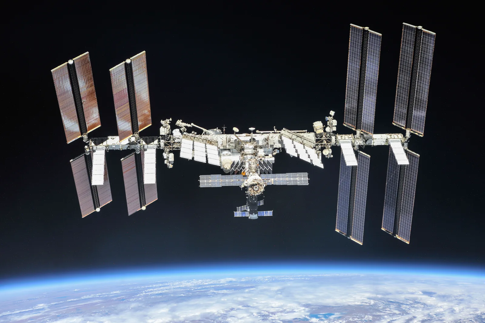

Satelliitit ja planeetat ympyräradalla
Miksi Kansainvälinen avaruusasema ISS ei putoa Maahan, ja miksi astronautit leijuvat sen sisällä?
Pohjatiedot
- Tasaisessa ympyräliikkeessä kappaleella on normaalikiihtyvyys $a_\text{n} = \tfrac{v^2}{r}$ kohti keskipistettä, ja ratanopeus on $v = \tfrac{2\pi r}{T}$luku Normaalikiihtyvyys ja ympyräliikkeen liikeyhtälö
- Kahden kappaleen välinen gravitaatiovoima on $F = \gamma \tfrac{Mm}{r^2}$, ja putoamiskiihtyvyys etäisyydellä $r$ on $g = \tfrac{\gamma M}{r^2}$luku Kappaleiden välinen gravitaatiovoima
Pohdinta
Kansainvälinen avaruusasema ISS kiertää Maata noin $420\,\text{km}$:n korkeudella, ja sen voi nähdä kirkkaana liikkuvana pisteenä Suomenkin taivaalla. Asema on massaltaan noin $420\,000\,\text{kg}$, mutta se ei putoa, vaikka mikään ei kannattele sitä. Aseman sisällä astronautit, työkalut ja vesipisarat leijuvat ilmassa.
Mikä pitää ISS:n radallaan, ja miksi astronautit leijuvat sen sisällä?
Valinnainen Kertaa: kokonaisvoima ympyräliikkeessä
Ennusta
Ennuste 1: liian pieni nopeus
Lisää ennusteita 2 kysymystä
Ennuste 2: kevyt ja raskas satelliitti
Ennuste 3: miksi astronautti leijuu?
Tutki
Simulaatio
Käyttöohje
Valitse lähtökorkeus ja satelliitin massa ja säädä lähtönopeutta $v$. Laukaise lähettää satelliitin radan ylimmästä kohdasta vaakasuoraan oikealle. Musta viiva on satelliitin rata ja katkoviiva ympyrä, jonka säde on lähtöhetken etäisyys. Oikealla (puhelimessa alla) oleva kuvaaja näyttää satelliitin korkeuden $h$ maanpinnasta sen mukaan, kuinka monta astetta satelliitti on kiertänyt Maan ympäri; katkoviiva on lähtökorkeus. Kun rata on ympyrä, kuvaaja on vaakasuora viiva. Ensimmäisen kierroksen jälkeen lukemissa näkyvät radan alin ja ylin korkeus sekä kiertoaika $T$. Kun muutat jotakin arvoa, satelliitti palaa lähtöpaikalle. Nopeus muuttaa vain animaation tahtia: kierros kestää ruudulla muutaman sekunnin, ja aika $t$ on simuloitua aikaa.
Mallin oletukset
Satelliittiin vaikuttaa vain Maan gravitaatiovoima $F = \gamma \tfrac{Mm}{r^2}$ kohti Maan keskipistettä, missä $M = 5{,}97 \cdot 10^{24}\,\text{kg}$ ja Maan säde $R = 6371\,\text{km}$. Ilmanvastusta, Kuun ja Auringon gravitaatiota ja Maan liikettä ei ole mallissa, joten esimerkiksi $155\,\text{km}$:n korkeudelle laskeutuva rata ei todellisuudessa säilyisi. Maa pysyy paikallaan, koska satelliitti on paljon kevyempi. Kuun etäisyydellä satelliitti on koekappale: oikean Kuun oma massa liikuttaisi myös Maata. Kaikki lukemat ovat mallin arvoja.
Laskennan selitys
Rataa ei piirretä valmiina, vaan liike lasketaan pienin aika-askelin. Jokaisella askeleella lasketaan kiihtyvyys $\tfrac{F}{m} = \tfrac{\gamma M}{r^2}$ kohti Maan keskipistettä, ja paikka ja nopeus päivitetään sen avulla (nopeus-Verlet-menetelmä, askel $\tfrac{1}{1500}$ paikallisen ympyräradan kiertoajasta). Kiertoaika $T$ on aika, jossa satelliitti kiertää täyden kierroksen Maan ympäri. Punaisen voimanuolen pituus on lähtöhetkellä sama kaikilla massoilla ja pienenee kuten $\tfrac{1}{r^2}$; voiman suuruus näkyy lukemissa. Sinisen nopeusnuolen pituus on verrannollinen vauhtiin.
Laukaise satelliitti vaakasuoraan ja seuraa, millaisen radan Maan gravitaatio sille piirtää.
Koe 1: millä nopeudella rata on ympyrä?
Testaa ennuste 1. Lähtökorkeus on $400\,\text{km}$ ja massa pysyy vakiona; muuta vain lähtönopeutta. Laukaise satelliitti ensin nopeudella $7{,}00\,\text{km/s}$, sitten esimerkiksi nopeuksilla $7{,}60$, $8{,}00$ ja $7{,}70\,\text{km/s}$. Kirjaa jokaisen laukaisun jälkeen radan alin ja ylin korkeus. Etsi nopeus, jolla ne ovat lähes yhtä suuret.
- Alkutila
- lähtökorkeus $h$: $400\,\text{km}$, satelliitin massa $m$: $1000\,\text{kg}$, lähtönopeus $v$: $7{,}00\,\text{km/s}$
- Vakiona
- lähtökorkeus $h$, satelliitin massa $m$
- Muutetaan
- lähtönopeus $v$
| lähtönopeus $v$ | alin korkeus $(\text{km})$ | ylin korkeus $(\text{km})$ |
|---|
Millä lähtönopeudella satelliitti kiertää $400\,\text{km}$:n korkeudella ympyrärataa? Vastaa kilometreinä sekunnissa kahden desimaalin tarkkuudella.
Vihje 1: ohjaava kysymys
Kun nopeus on liian pieni, alin korkeus jää alle $400\,\text{km}$:n; kun se on liian suuri, ylin korkeus nousee yli $400\,\text{km}$:n. Kumpaan suuntaan nopeutta pitää muuttaa?
Vihje 2: mikä yhteys
Puolita väliä: jos $7{,}60\,\text{km/s}$ on liian pieni ja $7{,}70\,\text{km/s}$ liian suuri, kokeile $7{,}65\,\text{km/s}$ ja jatka siitä.
Vihje 3: välivaihe
Ympyrärata syntyy, kun gravitaatiovoima on juuri ympyräliikkeen vaatima voima: $\gamma \tfrac{Mm}{r^2} = \tfrac{mv^2}{r}$. Voit tarkistaa tuloksen laskemalla $v = \sqrt{\tfrac{\gamma M}{r}}$, kun $r = 6771\,\text{km}$.
Näytä ratkaisu
Annettu
lähtökorkeus $h = 400\,\text{km}$; simulaatiossa $M = 5{,}97 \cdot 10^{24}\,\text{kg}$ ja $R = 6371\,\text{km}$; $\gamma = 6{,}674 \cdot 10^{-11}\,\tfrac{\text{N}\cdot\text{m}^2}{\text{kg}^2}$
Kysytty
ympyräradan lähtönopeus $v$ yksikössä km/s
Periaate
Simulaatiossa ympyrärata löytyy nopeudella, jolla radan alin ja ylin korkeus ovat yhtä suuret. Tulos voidaan tarkistaa laskemalla: satelliittiin vaikuttaa vain gravitaatio, joten se on ympyräliikkeen kokonaisvoima, $\gamma \tfrac{Mm}{r^2} = \tfrac{mv^2}{r}$.
Kaava
$\gamma \tfrac{Mm}{r^2} = \tfrac{mv^2}{r}$, josta massa $m$ supistuu ja $v = \sqrt{\dfrac{\gamma M}{r}}$, missä $r = R + h$
Muunnokset
Sijoitus
$$\begin{aligned} \gamma M &= 6{,}674 \cdot 10^{-11}\,\tfrac{\text{N}\cdot\text{m}^2}{\text{kg}^2} \cdot 5{,}97 \cdot 10^{24}\,\text{kg} \\ &= 3{,}984 \cdot 10^{14}\,\text{m}^3/\text{s}^2\text{,} \end{aligned}$$$$\begin{aligned} \gamma M &= 6{,}674 \cdot 10^{-11}\,\tfrac{\text{N}\cdot\text{m}^2}{\text{kg}^2} \\ &\quad \cdot 5{,}97 \cdot 10^{24}\,\text{kg} \\ &= 3{,}984 \cdot 10^{14}\,\text{m}^3/\text{s}^2\text{,} \end{aligned}$$ joten
Vastaus
$7{,}67\,\text{km/s}$
Kahdella desimaalilla, koska simulaation nopeussäätimen askel on $0{,}01\,\text{km/s}$.
Järkevyys
Simulaatiossa nopeudella $7{,}67\,\text{km/s}$ alin korkeus on noin $396\,\text{km}$ ja ylin $400\,\text{km}$, ja nopeudella $7{,}68\,\text{km/s}$ ylin korkeus nousee noin $432\,\text{km}$:iin, joten ympyräradan nopeus on näiden välissä. Tulos on hieman suurempi kuin esimerkin ISS:n $7{,}66\,\text{km/s}$, koska rata on $20\,\text{km}$ alempana.
Lisää tutkittavaa 3 tehtävää
Koe 2: vaikuttaako satelliitin massa?
Testaa ennuste 2. Lähtökorkeus on $400\,\text{km}$ ja lähtönopeus $7{,}67\,\text{km/s}$; muuta vain satelliitin massaa. Laukaise jokainen satelliitti ja kirjaa ensimmäisen kierroksen jälkeen alin ja ylin korkeus, kiertoaika ja gravitaatiovoima.
- Alkutila
- lähtökorkeus $h$: $400\,\text{km}$, lähtönopeus $v$ = $7{,}67\,\text{km/s}$, satelliitin massa $m$: $1\,\text{kg}$
- Vakiona
- lähtökorkeus $h$, lähtönopeus $v$
- Muutetaan
- satelliitin massa $m$
| satelliitin massa $m$ | alin korkeus $(\text{km})$ | ylin korkeus $(\text{km})$ | $T$ $(\text{min})$ | $F$ $(\text{N})$ |
|---|
Todellisia ratoja
Taulukossa on neljän lähes ympyrärataa kiertävän Maan satelliitin radan säde $r$ (etäisyys Maan keskipisteestä) ja kiertoaika $T$.
| Satelliitti | $r$ (km) | $T$ |
|---|---|---|
| ISS | $6790$ | $92{,}9\,\text{min}$ |
| GPS-satelliitti | $26\,560$ | $11\,\text{h}\;58\,\text{min}$ |
| geostationaarinen satelliitti | $42\,164$ | $23\,\text{h}\;56\,\text{min}$ |
| Kuu | $384\,400$ | $27{,}32\,\text{d}$ |
Laske GPS-satelliitin ratanopeus taulukon arvoista. Vastaa kilometreinä sekunnissa.
Vihje 1: ohjaava kysymys
Satelliitti kulkee yhden kierroksen aikana ympyrän kehän pituuden. Mikä on kehän pituus?
Vihje 2: mikä yhteys
$v = \tfrac{2\pi r}{T}$. Muunna kiertoaika ensin sekunneiksi.
Vihje 3: välivaihe
$r = 2{,}656 \cdot 10^{7}\,\text{m}$.
Näytä ratkaisu
Annettu
GPS-satelliitin radan säde $r = 26\,560\,\text{km}$ ja kiertoaika $T = 11\,\text{h}\;58\,\text{min}$ taulukosta
Kysytty
ratanopeus $v$ yksikössä km/s
Periaate
Rata on lähes ympyrä, ja satelliitti kulkee tasaisella vauhdilla yhden kierroksen aikana ympyrän kehän $2\pi r$ kiertoajassa $T$.
Kaava
$v = \dfrac{2\pi r}{T}$
Muunnokset
Sijoitus
Vastaus
$3{,}87\,\text{km/s}$
Kolme merkitsevää numeroa kuten kiertoajassa $11\,\text{h}\;58\,\text{min}$.
Järkevyys
GPS-satelliitti on noin neljä kertaa kauempana Maan keskipisteestä kuin ISS ($26\,560\,\text{km} : 6790\,\text{km}$ $\approx 3{,}9$), ja sen nopeus on noin puolet ISS:n nopeudesta $7{,}65\,\text{km/s}$. Ympyräradan malli $v = \sqrt{\tfrac{\gamma M}{r}}$ antaa samalle säteelle $3{,}873\,\text{km/s}$, lähes saman arvon.
Johtopäätös: mikä ratkaisee ympyräradan?
Kirjoita taulukoidesi perusteella: mitä radalle tapahtui, kun lähtönopeus oli liian pieni tai liian suuri, ja millä nopeudella rata oli ympyrä? Vaikuttiko satelliitin massa rataan, vaikka gravitaatiovoima muuttui? Mikä voima pitää satelliitin ympyräradalla?
Mallivastaus
Kun lähtönopeus oli $7{,}00\,\text{km/s}$, satelliitti törmäsi Maahan, ja nopeudella $7{,}60\,\text{km/s}$ se laskeutui noin $155\,\text{km}$:n korkeudelle ja palasi lähtökorkeudelle. Nopeudella $8{,}00\,\text{km/s}$ se nousi noin $1700\,\text{km}$:n korkeudelle. Ympyrärata syntyi noin nopeudella $7{,}67\,\text{km/s}$, jolloin alin ja ylin korkeus olivat lähes samat. Kokeessa 2 kaikki massat kiersivät saman radan noin $92{,}4\,\text{min}$:ssa, vaikka gravitaatiovoima kasvoi massan mukana ($8{,}69\,\text{N}$, $8{,}69\,\text{kN}$, $3{,}65\,\text{MN}$). Satelliittia pitää radallaan Maan gravitaatiovoima, joka on ainoa ja siis kokonaisvoima: ympyräradalla se on juuri ympyräliikkeen vaatima voima $\tfrac{mv^2}{r}$. Koska molemmat ovat verrannollisia massaan, massa ei vaikuta ratanopeuteen. Arvot ovat mallin arvoja.
Arvioi oma vastauksesi
Rastita kohdat, jotka omassa vastauksessasi jo on.
Kertaa asia teoriasta ja harjoittele tehtävillä.
Teoria
Ydinajatus
Kappaletta, joka kiertää toista kappaletta gravitaation varassa, kutsutaan satelliitiksi. Kuu on Maan luonnollinen satelliitti, ISS ja sääsatelliitit ovat ihmisen rakentamia. Rataa, jota pitkin satelliitti kiertää, kutsutaan kiertoradaksi. Satelliittiin vaikuttaa avaruudessa käytännössä vain yksi voima: Maan gravitaatiovoima, joka osoittaa kohti Maan keskipistettä. Koska se on ainoa voima, se on myös kokonaisvoima. Luvussa Normaalikiihtyvyys ja ympyräliikkeen liikeyhtälö todettiin, että tasaisessa ympyräliikkeessä kokonaisvoima osoittaa radan keskipisteeseen ja antaa kappaleelle normaalikiihtyvyyden. Ympyräradalla gravitaatiovoima tekee juuri tämän: se on kohtisuorassa nopeuteen nähden, joten se ei muuta vauhtia vaan kääntää nopeuden suuntaa koko ajan.
Satelliitti siis putoaa koko ajan kohti Maata, mutta ei osu siihen. Ilman gravitaatiota se jatkaisi suoraan radan tangentin suuntaan. Gravitaatio taivuttaa rataa, ja kun vauhti on juuri sopiva, rata kaartuu samaa tahtia kuin Maan pinta kaartuu satelliitin alla. Silloin etäisyys Maan keskipisteestä pysyy samana ja rata on ympyrä.
Jos nopeus on pienempi, gravitaatio kääntää rataa jyrkemmin kuin ympyrä vaatisi: satelliitti laskeutuu alemmas ja palaa sitten lähtökorkeudelle, tai osuu Maahan, jos nopeus on paljon liian pieni. Jos nopeus on suurempi, rata kaartuu loivemmin ja satelliitti nousee kauemmas ennen paluutaan. Näissä tapauksissa rata ei ole ympyrä vaan soikea, eikä tasaisen ympyräliikkeen malli kuvaa sitä.
Ratanopeus ympyräradalla
Kun satelliitti, jonka massa on $m$, kiertää ympyrärataa keskuskappaleen ympäri, gravitaatiovoima on ainoa voima ja siis kokonaisvoima. Newtonin toisen lain mukaan sen on oltava yhtä suuri kuin ympyräliikkeeseen tarvittava voima $m a_\text{n} = \tfrac{m v^2}{r}$:
$$\gamma \frac{M m}{r^2} = \frac{m v^2}{r}$$
missä $\gamma = 6{,}674 \cdot 10^{-11}\,\tfrac{\text{N}\cdot\text{m}^2}{\text{kg}^2}$ on gravitaatiovakio, $M$ keskuskappaleen massa ($\text{kg}$), $m$ satelliitin massa ($\text{kg}$), $r$ radan säde ($\text{m}$) ja $v$ satelliitin ratanopeus ($\text{m/s}$). Radan säde mitataan keskuskappaleen keskipisteestä: Maan satelliitille $r = R + h$, missä $R = 6371\,\text{km}$ on Maan säde ja $h$ satelliitin korkeus maanpinnasta.
Satelliitin massa $m$ on yhtälön kummallakin puolella ja supistuu pois. Kun yhtälö kerrotaan puolittain luvulla $r$ ja jaetaan massalla $m$, saadaan $v^2 = \tfrac{\gamma M}{r}$, joten ympyräradan ratanopeus on
$$v = \sqrt{\frac{\gamma M}{r}}$$
Ratanopeus riippuu vain keskuskappaleen massasta $M$ ja radan säteestä $r$, ei satelliitin massasta. Raskas avaruusasema ja pieni kuutiosatelliitti kiertävät samalla korkeudella samalla nopeudella. Mitä kauempana satelliitti kiertää, sitä pienempi sen ratanopeus on.
Yhden kierroksen aikana satelliitti kulkee ympyrän kehän $2\pi r$, joten kiertoaika saadaan luvun Normaalikiihtyvyys ja ympyräliikkeen liikeyhtälö yhteydestä $v = \tfrac{2\pi r}{T}$:
$$T = \frac{2\pi r}{v}$$
missä $T$ on kiertoaika ($\text{s}$). Kaukana kiertävän satelliitin rata on pidempi ja sen vauhti pienempi, joten kiertoaika kasvaa nopeasti etäisyyden kasvaessa: ISS kiertää Maan noin puolessatoista tunnissa, Kuu noin $27\,\text{d}$:ssä. Kun satelliitin säde ja kiertoaika mitataan, samasta yhtälöstä voidaan ratkaista myös keskuskappaleen massa $M$. Näin on määritetty esimerkiksi Maan, Auringon ja Marsin massat.
Geostationaarinen rata
Geostationaarinen satelliitti kiertää päiväntasaajan yläpuolella samaan suuntaan kuin Maa pyörii, ja sen kiertoaika on sama kuin Maan pyörähdysaika, $23\,\text{h}\;56\,\text{min}$. Siksi se näyttää pysyvän taivaalla paikallaan, ja lautasantennin voi suunnata siihen kerran. Koska kiertoaika määrää radan säteen, kaikki geostationaariset satelliitit kiertävät samalla korkeudella, noin $35\,800\,\text{km}$:n korkeudella.
Painottomuus
Avaruusasemalla astronautit leijuvat, ja vaaka näyttäisi nollaa. Syy ei ole painovoiman puuttuminen. ISS:n korkeudella $420\,\text{km}$ gravitaatiovoiman antama kiihtyvyys on $\tfrac{\gamma M}{r^2} \approx 8{,}6\,\text{m/s}^2$, noin $88\,\%$ maanpinnan arvosta. Astronauttiin, jonka massa on $70\,\text{kg}$, vaikuttaa siis noin $605\,\text{N}$:n paino eli Maan gravitaatiovoima $F$, kun maanpinnalla se olisi $687\,\text{N}$.
Asema ja astronautti ovat vapaassa pudotuksessa: kumpaankin vaikuttaa vain gravitaatio, ja kumpikin saa saman kiihtyvyyden kohti Maata. Koska ne putoavat samalla tavalla, lattia ei paina astronauttia eikä vaaka joudu tukemaan häntä, joten tukivoima on nolla. Painottomuus on tuettomuutta ja yhteistä vapaata putoamista: kappaleeseen vaikuttaa vain gravitaatio, ja se putoaa samalla kiihtyvyydellä kuin ympäristönsä. Tukivoima on nolla, vaikka paino vaikuttaa koko ajan.

Saman tilan voi kokea hetken maan päälläkin: hypyn aikana, vapaasti putoavassa hississä tai lentokoneessa, joka lentää moottorit säädettyinä heittoliikkeen rataa. Painottomuutta ei selitä mikään gravitaation kumoava "keskipakoisvoima". Jos jokin voima kumoaisi gravitaation, kokonaisvoima olisi nolla, ja asema jatkaisi suoraan eteenpäin eikä kiertäisi Maata.
Milloin ympyrämalli pätee
Tasaisen ympyräliikkeen malli on yksinkertaistus. Se kuvaa satelliitin liikettä hyvin, kun
- keskuskappale on paljon massiivisempi kuin satelliitti, joten sitä voidaan pitää paikallaan pysyvänä,
- muiden kappaleiden gravitaatio ja ilmanvastus ovat niin pieniä, että vain keskuskappaleen gravitaatio vaikuttaa,
- satelliitin nopeus on juuri sen radan säteen ympyräradan nopeus, jolloin etäisyys keskipisteestä pysyy vakiona.
Todellisessa satelliitin liikkeessä on aina pieniä poikkeamia mallista. Matalalla radalla ohut yläilmakehä jarruttaa liikettä, Kuun ja Auringon gravitaatio vetää satelliittia, eikä Maan massa jakaudu täsmälleen pallosymmetrisesti, koska Maa on navoiltaan hieman litistynyt. Yläilmakehän jarrutuksen vuoksi esimerkiksi ISS:n rataa nostetaan ajoittain rakettimoottoreilla.
Monet todelliset radat ovat lähes ympyröitä. Maan etäisyys Auringosta vaihtelee vain noin $3\,\%$ keskietäisyydestä, joten ympyrämalli kuvaa Maan rataa hyvin. Kuun etäisyys Maasta vaihtelee noin $11\,\%$, joten malli antaa Kuulle hyvän likiarvon. Halleyn komeetan rata on sen sijaan hyvin pitkänomainen, eikä ympyrämalli sovi siihen lainkaan.
| Kappale | lähin etäisyys | suurin etäisyys |
|---|---|---|
| Maa | $147{,}1\,\text{milj. km}$ | $152{,}1\,\text{milj. km}$ |
| Kuu | $363\,300\,\text{km}$ | $405\,500\,\text{km}$ |
| Halleyn komeetta | $88\,\text{milj. km}$ | $5250\,\text{milj. km}$ |
Maan ja Halleyn komeetan etäisyydet on mitattu Auringosta, Kuun etäisyys Maasta. Lähde: NASA, Planetary Fact Sheets (Earth, Moon) ja Halleyn komeetan ratatiedot, 2024.
Pienet poikkeamat mallista näkyvät tarkoissa mittauksissa. Kuun mitatuista arvoista laskettu ratanopeus $1{,}023\,\text{km/s}$ on noin $0{,}5\,\%$ suurempi kuin mallin antama $1{,}018\,\text{km/s}$, koska Kuun massa on noin $\tfrac{1}{81}$ Maan massasta: Maa ja Kuu kiertävät yhteistä massakeskipistettä, eikä Maa pysy paikallaan. ISS:n korkeudella ohut ilma jarruttaa asemaa ja rata madaltuu hitaasti, joten asemaa nostetaan moottoreilla säännöllisesti.
Yleinen virhekäsitys
"Avaruudessa ei ole painovoimaa, siksi astronautit leijuvat." Väite on väärä. ISS:n korkeudella gravitaatio on lähes yhtä voimakas kuin maanpinnalla, ja juuri se pitää aseman radallaan. Ilman gravitaatiota asema lentäisi suoraan pois. Astronautit leijuvat, koska he ja asema putoavat vapaasti samalla kiihtyvyydellä.
Toinen virhe on sijoittaa kaavaan $v = \sqrt{\tfrac{\gamma M}{r}}$ korkeus $h$ eikä etäisyyttä Maan keskipisteestä $r = R + h$. ISS:lle se antaisi nopeudeksi noin $31\,\text{km/s}$, nelinkertaisen todelliseen verrattuna. Kolmas virhe on luulla, että raskaan satelliitin täytyy kiertää nopeammin: suurempi massa saa suuremman gravitaatiovoiman, mutta se tarvitsee myös suuremman voiman kääntyäkseen, joten massa supistuu pois.
Tiivistelmä
- Satelliittiin vaikuttaa vain keskuskappaleen gravitaatiovoima. Se on kokonaisvoima, joka antaa ympyräradalla normaalikiihtyvyyden: $\gamma \tfrac{Mm}{r^2} = \tfrac{mv^2}{r}$.
- Ympyräradan ratanopeus on $v = \sqrt{\tfrac{\gamma M}{r}}$ ja kiertoaika $T = \tfrac{2\pi r}{v}$. Satelliitin massa ei vaikuta, ja kauempana kiertävä satelliitti on hitaampi ja sen kiertoaika on pidempi.
- Radan säde mitataan keskuskappaleen keskipisteestä: $r = R + h$.
- Painottomuus on tuettomuutta ja yhteistä vapaata putoamista: gravitaatio vaikuttaa, mutta tukivoima on nolla.
- Ympyrämalli pätee, kun keskuskappale on paljon satelliittia massiivisempi, muut voimat ovat pieniä ja rata on lähes ympyrä.
Valinnainen Palaa ennusteisiisi
Vertaa ennusteitasi kokeiden mallin arvoihin ja teoriaan. Palaa sitten alun kysymykseen: mikä pitää ISS:n radallaan, ja miksi astronautit leijuvat sen sisällä?
Muuttaisitko ennustettasi?
Esimerkit
Esimerkki 1: ISS:n kiertoaika
Kansainvälinen avaruusasema ISS kiertää Maata lähes ympyrärataa noin $420\,\text{km}$:n korkeudella. Laske aseman ratanopeus ja kiertoaika. Maan massa on $M = 5{,}97 \cdot 10^{24}\,\text{kg}$ ja säde $R = 6371\,\text{km}$. Ilmanvastus jätetään huomiotta.
Vaihe 1/7
Tunnetut ja kysytty. Korkeus $h = 420\,\text{km}$, Maan massa $M = 5{,}97 \cdot 10^{24}\,\text{kg}$ ja säde $R = 6371\,\text{km}$, gravitaatiovakio $\gamma = 6{,}674 \cdot 10^{-11}\,\tfrac{\text{N}\cdot\text{m}^2}{\text{kg}^2}$.
Kysytään ratanopeutta $v$ ja kiertoaikaa $T$.
Vaihe 2/7
Periaate. Asemaan vaikuttaa vain Maan gravitaatiovoima, kun ilmanvastus jätetään huomiotta. Se on siis kokonaisvoima ja antaa ympyräradalla normaalikiihtyvyyden kohti Maan keskipistettä: $\gamma \tfrac{Mm}{r^2} = \tfrac{mv^2}{r}$. Radan säde mitataan Maan keskipisteestä, joten $r = R + h$.
Vaihe 3/7
Kaava ratkaistuna. Aseman massa supistuu pois:
$$\begin{aligned} r &= R + h \\ v &= \sqrt{\frac{\gamma M}{r}} \\ T &= \frac{2\pi r}{v} \end{aligned}$$
Vaihe 4/7
Yksikkömuunnokset. Etäisyydet metreiksi:
joten $r = 6{,}791 \cdot 10^{6}\,\text{m}$.
Vaihe 5/7
Sijoitus. $$\begin{aligned} v &= \sqrt{\frac{\gamma M}{r}} \\ \gamma M &= 6{,}674 \cdot 10^{-11}\,\tfrac{\text{N}\cdot\text{m}^2}{\text{kg}^2} \cdot 5{,}97 \cdot 10^{24}\,\text{kg} \\ \quad &= 3{,}98438 \cdot 10^{14}\,\text{m}^3/\text{s}^2 \\ v &= \sqrt{\frac{3{,}98438 \cdot 10^{14}\,\text{m}^3/\text{s}^2}{6{,}791 \cdot 10^{6}\,\text{m}}} \\ &= 7659{,}7\,\text{m/s} \\[6pt] T &= \frac{2\pi r}{v} \\ &= \frac{2\pi \cdot 6{,}791 \cdot 10^{6}\,\text{m}}{7659{,}7\,\text{m/s}} \\ &= 5570{,}6\,\text{s} \end{aligned}$$$$\begin{aligned} v &= \sqrt{\frac{\gamma M}{r}} \\ \gamma M &= 6{,}674 \cdot 10^{-11}\,\tfrac{\text{N}\cdot\text{m}^2}{\text{kg}^2} \\ &\quad \cdot 5{,}97 \cdot 10^{24}\,\text{kg} \\ \quad &= 3{,}98438 \cdot 10^{14}\,\text{m}^3/\text{s}^2 \\ v &= \sqrt{\frac{3{,}98438 \cdot 10^{14}\,\text{m}^3/\text{s}^2}{6{,}791 \cdot 10^{6}\,\text{m}}} \\ &= 7659{,}7\,\text{m/s} \\[6pt] T &= \frac{2\pi r}{v} \\ &= \frac{2\pi \cdot 6{,}791 \cdot 10^{6}\,\text{m}}{7659{,}7\,\text{m/s}} \\ &= 5570{,}6\,\text{s} \end{aligned}$$
Vaihe 6/7
Tulos. Ratanopeus on $v \approx 7{,}66\,\text{km/s}$ ja kiertoaika
Tulokset ilmoitetaan kolmella merkitsevällä numerolla kuten Maan massa $5{,}97 \cdot 10^{24}\,\text{kg}$.
Vaihe 7/7
Järkevyys. NASAn mukaan ISS kiertää Maan noin $92{,}9\,\text{min}$:ssa, joten malli on hyvin lähellä mitattua. Aivan maanpinnan tasolla ympyräradan nopeus olisi
ISS on hieman kauempana, joten sen nopeus on hieman pienempi, kuten pitääkin.
Valinnainen Esimerkki 2: Etsi virhe
Esimerkki 3: Sovella uuteen tilanteeseen
Hubble-avaruusteleskooppi kiertää Maata lähes ympyrärataa, ja NASAn mukaan sen kiertoaika on noin $95{,}4\,\text{min}$. Kuinka korkealla maanpinnasta Hubble kiertää? Maan massa on $5{,}97 \cdot 10^{24}\,\text{kg}$ ja säde $6371\,\text{km}$. Vastaa kilometreinä.
Vihje 1: ohjaava kysymys
Tunnet nyt kiertoajan etkä nopeutta. Millä kahdella yhtälöllä nopeus, säde ja kiertoaika liittyvät toisiinsa ympyräradalla?
Vihje 2: mikä yhteys
Sijoita $v = \tfrac{2\pi r}{T}$ yhtälöön $v^2 = \tfrac{\gamma M}{r}$ ja ratkaise $r^3 = \tfrac{\gamma M T^2}{4\pi^2}$.
Vihje 3: välivaihe
joten
Muista lopuksi vähentää Maan säde.
Näytä ratkaisu
Annettu
kiertoaika $T = 95{,}4\,\text{min}$, Maan massa $M = 5{,}97 \cdot 10^{24}\,\text{kg}$ ja säde $R = 6371\,\text{km}$, $\gamma = 6{,}674 \cdot 10^{-11}\,\tfrac{\text{N}\cdot\text{m}^2}{\text{kg}^2}$
Kysytty
korkeus maanpinnasta $h$ kilometreinä
Periaate
Teleskooppiin vaikuttaa vain Maan gravitaatiovoima, joten se on ympyräliikkeen kokonaisvoima: $\gamma \tfrac{Mm}{r^2} = \tfrac{mv^2}{r}$. Lisäksi tasaisessa ympyräliikkeessä $v = \tfrac{2\pi r}{T}$. Kun nopeus sijoitetaan, jäljelle jää yhtälö säteelle $r$.
Kaava
josta
$h = r - R$
Muunnokset
Sijoitus
$$\begin{aligned} \gamma M &= 6{,}674 \cdot 10^{-11}\,\tfrac{\text{N}\cdot\text{m}^2}{\text{kg}^2} \cdot 5{,}97 \cdot 10^{24}\,\text{kg} \\ &= 3{,}984 \cdot 10^{14}\,\text{m}^3/\text{s}^2\text{,} \end{aligned}$$$$\begin{aligned} \gamma M &= 6{,}674 \cdot 10^{-11}\,\tfrac{\text{N}\cdot\text{m}^2}{\text{kg}^2} \\ &\quad \cdot 5{,}97 \cdot 10^{24}\,\text{kg} \\ &= 3{,}984 \cdot 10^{14}\,\text{m}^3/\text{s}^2\text{,} \end{aligned}$$
joten
Vastaus
noin $544\,\text{km}$, kolme merkitsevää numeroa kuten kiertoajassa $95{,}4\,\text{min}$.
Järkevyys
Hubblen kiertoaika on hieman pidempi kuin ISS:n $92{,}9\,\text{min}$, joten sen täytyy kiertää hieman ylempänä kuin ISS ($420\,\text{km}$), kuten tulos kertoo. Tarkistus: säteellä $6915\,\text{km}$ ratanopeus on
ja $\sqrt{\tfrac{\gamma M}{r}}$ antaa saman arvon.
Kertaa luvun käsitteet
Jos valitset Kertaa myöhemmin, kortti siirtyy kertauspakkaasi.
- Pyörähdys
- Yksi kokonainen kierros ympyräradalla.
- Satelliitti
- Kappale, joka kiertää gravitaation vaikutuksesta toista kappaletta.
- Kiertorata
- Reitti, jota satelliitti tai taivaankappale kulkee keskuskappaleensa ympäri.
- Kiertoaika
- Yhteen kokonaiseen kierrokseen keskuskappaleen ympäri kuluva aika.
- Geostationaarinen rata
- Päiväntasaajan yläpuolinen ympyrärata, jolla satelliitin kiertoaika on vuorokausi, joten se näyttää pysyvän paikallaan taivaalla.
Tehtävät
- Tehtävä 6-1YdintehtäväPerus
Sääsatelliitti NOAA-20 kiertää Maata lähes ympyrärataa, jonka säde on $7196\,\text{km}$. Maan massa on $5{,}97 \cdot 10^{24}\,\text{kg}$. Laske satelliitin ratanopeus. Anna vastaus kilometreinä sekunnissa.
Vastaus
$7{,}44\,\text{km/s}$
Näytä ratkaisu
Annettu
radan säde $r = 7196\,\text{km}$, Maan massa $M = 5{,}97 \cdot 10^{24}\,\text{kg}$, $\gamma = 6{,}674 \cdot 10^{-11}\,\tfrac{\text{N}\cdot\text{m}^2}{\text{kg}^2}$
Kysytty
ratanopeus $v$ kilometreinä sekunnissa
Periaate
Satelliittiin vaikuttaa vain Maan gravitaatiovoima, joten se on ympyräliikkeen kokonaisvoima: $\gamma \tfrac{Mm}{r^2} = \tfrac{mv^2}{r}$. Satelliitin massa supistuu pois.
Kaava
$\gamma \dfrac{Mm}{r^2}$$= \dfrac{mv^2}{r}$josta $v = \sqrt{\dfrac{\gamma M}{r}}$
Muunnokset
$r$$= 7196\,\text{km}$$= 7{,}196 \cdot 10^{6}\,\text{m}$lopuksi $1\,\text{km/s} = 1000\,\text{m/s}$.
Sijoitus
$$\begin{aligned} \gamma M &= 6{,}674 \cdot 10^{-11}\,\tfrac{\text{N}\cdot\text{m}^2}{\text{kg}^2} \cdot 5{,}97 \cdot 10^{24}\,\text{kg} \\ &= 3{,}984 \cdot 10^{14}\,\text{m}^3/\text{s}^2\text{,} \end{aligned}$$$$\begin{aligned} \gamma M &= 6{,}674 \cdot 10^{-11}\,\tfrac{\text{N}\cdot\text{m}^2}{\text{kg}^2} \\ &\quad \cdot 5{,}97 \cdot 10^{24}\,\text{kg} \\ &= 3{,}984 \cdot 10^{14}\,\text{m}^3/\text{s}^2\text{,} \end{aligned}$$ joten
$v$$= \sqrt{\dfrac{3{,}984 \cdot 10^{14}\,\text{m}^3/\text{s}^2}{7{,}196 \cdot 10^{6}\,\text{m}}}$$= 7441\,\text{m/s}$$= 7{,}441\,\text{km/s}$Vastaus
$7{,}44\,\text{km/s}$
Kolme merkitsevää numeroa kuten Maan massassa $5{,}97 \cdot 10^{24}\,\text{kg}$.
Järkevyys
NOAA-20 kiertää noin $825\,\text{km}$:n korkeudella eli ylempänä kuin ISS, jonka nopeus on noin $7{,}66\,\text{km/s}$. Kauempana kiertävä satelliitti on hitaampi, joten hieman pienempi nopeus on odotettu.
- Tehtävä 6-6YdintehtäväPerus
Astronautti leijuu avaruusasemalla, joka kiertää Maata $400\,\text{km}$:n korkeudella. Mikä seuraavista selittää leijumisen?
Vastaus
Astronautti ja asema putoavat vapaasti samalla kiihtyvyydellä, joten tukivoimaa ei ole.
Näytä ratkaisu
Kysytty
miksi astronautti leijuu avaruusasemalla, vaikka Maan gravitaatio vaikuttaa häneen.
Periaate
Aseman korkeudella etäisyys Maan keskipisteestä on noin $6\,\%$ suurempi kuin maanpinnalla, joten gravitaatiovoima on edelleen noin $88\,\%$ maanpinnan arvosta. Asema ja astronautti liikkuvat vain gravitaation varassa samalla kiihtyvyydellä, eli ne putoavat vapaasti. Painottomuus tarkoittaa tukivoiman puuttumista, ei gravitaation puuttumista.
Mallivastaus
Astronautti ja asema putoavat vapaasti samalla kiihtyvyydellä, joten asema ei työnnä astronauttia tukivoimalla. Hän leijuu aseman sisällä, vaikka gravitaatiovoima vaikuttaa häneen. Vaihtoehto, jonka mukaan gravitaatio on korkeudella lähes olematon, on väärä, koska voima on yhä noin $88\,\%$ maanpinnan arvosta.
Keskipakovoima ei ole voima, joka vaikuttaa astronauttiin inertiaalikoordinaatistossa, joten sitä ei tarvita selitykseen: gravitaatio on ainoa voima ja se on ympyräliikkeen kokonaisvoima, joten voimat eivät kumoa toisiaan. Vaihtoehto, jonka mukaan vauhti poistaa gravitaation vaikutuksen, on väärä: suuri sivuttaisvauhti ei kumoa gravitaatiota, vaan se saa aseman putoamaan koko ajan Maan ohi.
- Tehtävä 6-13YdintehtäväSoveltava
Marsia kiertävä luotain kulkee ympyrärataa $400\,\text{km}$:n korkeudella Marsin pinnasta. Marsin massa on $6{,}42 \cdot 10^{23}\,\text{kg}$ ja säde $3390\,\text{km}$. Laske luotaimen ratanopeus. Anna vastaus kilometreinä sekunnissa.
Vastaus
$3{,}36\,\text{km/s}$
Näytä ratkaisu
Annettu
korkeus $h = 400\,\text{km}$, Marsin massa $M = 6{,}42 \cdot 10^{23}\,\text{kg}$ ja säde $R = 3390\,\text{km}$, $\gamma = 6{,}674 \cdot 10^{-11}\,\tfrac{\text{N}\cdot\text{m}^2}{\text{kg}^2}$
Kysytty
ratanopeus $v$ kilometreinä sekunnissa
Periaate
Luotaimeen vaikuttaa vain Marsin gravitaatiovoima, joten se on ympyräliikkeen kokonaisvoima. Radan säde mitataan Marsin keskipisteestä: $r = R + h$.
Kaava
$\gamma \dfrac{Mm}{r^2}$$= \dfrac{mv^2}{r}$josta $v = \sqrt{\dfrac{\gamma M}{R + h}}$
Muunnokset
$r$$= 3390\,\text{km} + 400\,\text{km}$$= 3790\,\text{km}$$= 3{,}790 \cdot 10^{6}\,\text{m}$lopuksi $1\,\text{km/s} = 1000\,\text{m/s}$.
Sijoitus
$$\begin{aligned} \gamma M &= 6{,}674 \cdot 10^{-11}\,\tfrac{\text{N}\cdot\text{m}^2}{\text{kg}^2} \cdot 6{,}42 \cdot 10^{23}\,\text{kg} \\ &= 4{,}285 \cdot 10^{13}\,\text{m}^3/\text{s}^2\text{,} \end{aligned}$$$$\begin{aligned} \gamma M &= 6{,}674 \cdot 10^{-11}\,\tfrac{\text{N}\cdot\text{m}^2}{\text{kg}^2} \\ &\quad \cdot 6{,}42 \cdot 10^{23}\,\text{kg} \\ &= 4{,}285 \cdot 10^{13}\,\text{m}^3/\text{s}^2\text{,} \end{aligned}$$ joten
$v$$= \sqrt{\dfrac{4{,}285 \cdot 10^{13}\,\text{m}^3/\text{s}^2}{3{,}790 \cdot 10^{6}\,\text{m}}}$$= 3362\,\text{m/s}$$= 3{,}362\,\text{km/s}$Vastaus
$3{,}36\,\text{km/s}$
Kolme merkitsevää numeroa kuten Marsin massassa $6{,}42 \cdot 10^{23}\,\text{kg}$.
Järkevyys
Samalla korkeudella Maan ympäri nopeus on noin $7{,}7\,\text{km/s}$. Marsin massa on vain noin kymmenesosa Maan massasta ja säde noin puolet, joten nopeuden pitää olla selvästi pienempi:
$7{,}7\,\text{km/s} \cdot \sqrt{0{,}107 \cdot \tfrac{6771}{3790}}$$\approx 3{,}4\,\text{km/s}$$7{,}7\,\text{km/s} \cdot \sqrt{0{,}107 \cdot \tfrac{6771}{3790}}$$\approx 3{,}4\,\text{km/s}$ - Tehtävä 6-16YdintehtäväSoveltava
Taulukossa on Jupiterin neljän suurimman kuun ratasäde $r$ ja kiertoaika $T$ (esimerkkiaineisto, pyöristetty todellisista arvoista). Kuut kiertävät Jupiteria lähes ympyräratoja.
Ympyräradan mallista seuraa $T^2 = \dfrac{4\pi^2}{\gamma M} r^3$, missä $M$ on Jupiterin massa. Laske jokaiselle kuulle suhde $\dfrac{r^3}{T^2}$ SI-yksiköissä ja totea, että suhde on lähes sama.
Määritä Jupiterin massa suhteiden keskiarvosta. Anna vastaus yksikössä $10^{27}\,\text{kg}$.
Jupiterin kuiden ratasäde ja kiertoaika Kuu $r\,(10^{3}\,\text{km})$ $T\,(\text{d})$ Io 421,7 1,769 Europa 671,1 3,551 Ganymedes 1070 7,155 Callisto 1883 16,69 Vastaus
$1{,}90 \cdot 10^{27}\,\text{kg}$
Näytä ratkaisu
Annettu
taulukosta $r$ ja $T$ neljälle kuulle, $\gamma = 6{,}674 \cdot 10^{-11}\,\tfrac{\text{N}\cdot\text{m}^2}{\text{kg}^2}$
Kysytty
Jupiterin massa $M$ yksikössä $10^{27}\,\text{kg}$
Periaate
Kuun ainoa voima on Jupiterin gravitaatiovoima, joka on ympyräliikkeen kokonaisvoima: $\gamma \tfrac{Mm}{r^2} = \tfrac{mv^2}{r}$ ja $v = \tfrac{2\pi r}{T}$. Tämä on oppitunnin kaava $v = \sqrt{\tfrac{\gamma M}{r}}$ yhdistettynä kaavaan $v = \tfrac{2\pi r}{T}$, ja siitä seuraa, että suhde $\tfrac{r^3}{T^2}$ on sama kaikille kuille, koska se riippuu vain keskuskappaleen massasta. Mittausten pienet erot tasataan keskiarvolla.
Kaava
$\dfrac{\gamma M}{r}$$= \dfrac{4\pi^2 r^2}{T^2}$josta
$\dfrac{r^3}{T^2}$$= \dfrac{\gamma M}{4\pi^2}$$M$$= \dfrac{4\pi^2}{\gamma} \cdot \dfrac{r^3}{T^2}$Muunnokset
$r$ metreiksi: $421{,}7 \cdot 10^{3}\,\text{km} = 4{,}217 \cdot 10^{8}\,\text{m}$, $6{,}711 \cdot 10^{8}\,\text{m}$, $1{,}070 \cdot 10^{9}\,\text{m}$ ja $1{,}883 \cdot 10^{9}\,\text{m}$. $T$ sekunneiksi: $1{,}769 \cdot 86\,400\,\text{s} = 152\,842\,\text{s}$, $3{,}551 \cdot 86\,400\,\text{s} = 306\,806\,\text{s}$, $7{,}155 \cdot 86\,400\,\text{s} = 618\,192\,\text{s}$ ja $16{,}69 \cdot 86\,400\,\text{s} = 1\,442\,016\,\text{s}$.
Sijoitus
Suhteet ovat Iolle $3{,}2102 \cdot 10^{15}\,\text{m}^3/\text{s}^2$, Europalle $3{,}2110 \cdot 10^{15}\,\text{m}^3/\text{s}^2$, Ganymedekselle $3{,}2056 \cdot 10^{15}\,\text{m}^3/\text{s}^2$ ja Callistolle $3{,}2108 \cdot 10^{15}\,\text{m}^3/\text{s}^2$. Ne poikkeavat toisistaan alle $0{,}2\,\%$. Summa on $1{,}2837 \cdot 10^{16}\,\text{m}^3/\text{s}^2$, joten keskiarvo on $3{,}2094 \cdot 10^{15}\,\text{m}^3/\text{s}^2$. Tällöin
$4\pi^2 \cdot 3{,}2094 \cdot 10^{15}\,\text{m}^3/\text{s}^2$$= 1{,}2670 \cdot 10^{17}\,\text{m}^3/\text{s}^2$$4\pi^2 \cdot 3{,}2094 \cdot 10^{15}\,\text{m}^3/\text{s}^2$$= 1{,}2670 \cdot 10^{17}\,\text{m}^3/\text{s}^2$joten
$M$$= \dfrac{1{,}2670 \cdot 10^{17}\,\text{m}^3/\text{s}^2}{6{,}674 \cdot 10^{-11}\,\text{N}\cdot\text{m}^2/\text{kg}^2}$$= 1{,}898 \cdot 10^{27}\,\text{kg}$Vastaus
$1{,}90 \cdot 10^{27}\,\text{kg}$
Kolme merkitsevää numeroa: taulukon arvoissa on neljä, mutta kuiden suhteet eroavat toisistaan jo neljännessä numerossa, joten massan neljäs numero on epävarma.
Järkevyys
Tulos on noin $318$ kertaa Maan massa $5{,}97 \cdot 10^{24}\,\text{kg}$, mikä on Jupiterin tunnettu massa. Myös suhteet sopivat yhteen: Callisto on $1883 : 421{,}7 \approx 4{,}47$ kertaa kauempana kuin Io, ja sen kiertoaika on $4{,}47^{1{,}5} \approx 9{,}4$ kertaa pidempi, mikä vastaa suhdetta $16{,}69 : 1{,}769 \approx 9{,}4$.
Taso 1 · perusharjoitus 9 tehtävää
- Tehtävä 6-2
GPS-satelliitti kiertää Maata ympyrärataa, jonka säde on $26\,560\,\text{km}$, nopeudella $3{,}87\,\text{km/s}$. Kuinka pitkä on satelliitin kiertoaika? Anna vastaus tunteina.
Vastaus
$12{,}0\,\text{h}$
Näytä ratkaisu
Annettu
radan säde $r = 26\,560\,\text{km}$, ratanopeus $v = 3{,}87\,\text{km/s}$
Kysytty
kiertoaika $T$ tunteina
Periaate
Satelliitti kulkee tasaisella vauhdilla, ja yhden kierroksen aikana se kulkee ympyrän kehän $2\pi r$ kiertoajassa $T$.
Kaava
$v = \dfrac{2\pi r}{T}$, josta $T = \dfrac{2\pi r}{v}$
Muunnokset
$r$$= 26\,560\,\text{km}$$= 2{,}656 \cdot 10^{7}\,\text{m}$$v$$= 3{,}87\,\text{km/s}$$= 3870\,\text{m/s}$lopuksi $1\,\text{h} = 3600\,\text{s}$.
Sijoitus
$T$$= \dfrac{2\pi \cdot 2{,}656 \cdot 10^{7}\,\text{m}}{3870\,\text{m/s}}$$= 43\,122\,\text{s}$$= 43\,122 : 3600\,\text{h}$$= 11{,}98\,\text{h}$Vastaus
$12{,}0\,\text{h}$
Kolme merkitsevää numeroa kuten nopeudessa $3{,}87\,\text{km/s}$.
Järkevyys
GPS-satelliitit kiertävät Maan kahdesti vuorokaudessa, joten noin $12\,\text{h}$:n kiertoaika on oikea. Ympyrän kehä on noin $1{,}7 \cdot 10^{5}\,\text{km}$, ja noin $4\,\text{km/s}$:n vauhdilla siihen kuluu noin $4 \cdot 10^{4}\,\text{s}$ eli yli $11\,\text{h}$.
- Tehtävä 6-3
Geostationaarinen viestintäsatelliitti kiertää Maata ympyrärataa, jonka säde on $42\,164\,\text{km}$. Maan massa on $5{,}97 \cdot 10^{24}\,\text{kg}$. Laske satelliitin normaalikiihtyvyys.
Vastaus
$0{,}224\,\text{m/s}^2$
Näytä ratkaisu
Annettu
radan säde $r = 42\,164\,\text{km}$, Maan massa $M = 5{,}97 \cdot 10^{24}\,\text{kg}$, $\gamma = 6{,}674 \cdot 10^{-11}\,\tfrac{\text{N}\cdot\text{m}^2}{\text{kg}^2}$
Kysytty
normaalikiihtyvyys $a_\text{n}$
Periaate
Satelliittiin vaikuttaa vain gravitaatiovoima, joten se on kokonaisvoima. Newtonin toisen lain mukaan $\gamma \tfrac{Mm}{r^2} = m a_\text{n}$, joten normaalikiihtyvyys on sama kuin gravitaatiovoiman antama kiihtyvyys sillä etäisyydellä.
Kaava
$\gamma \dfrac{Mm}{r^2} = m a_\text{n}$, josta $a_\text{n} = \dfrac{\gamma M}{r^2}$
Muunnokset
$r$$= 42\,164\,\text{km}$$= 4{,}2164 \cdot 10^{7}\,\text{m}$Sijoitus
$$\begin{aligned} \gamma M &= 6{,}674 \cdot 10^{-11}\,\tfrac{\text{N}\cdot\text{m}^2}{\text{kg}^2} \cdot 5{,}97 \cdot 10^{24}\,\text{kg} \\ &= 3{,}984 \cdot 10^{14}\,\text{m}^3/\text{s}^2\text{,} \end{aligned}$$$$\begin{aligned} \gamma M &= 6{,}674 \cdot 10^{-11}\,\tfrac{\text{N}\cdot\text{m}^2}{\text{kg}^2} \\ &\quad \cdot 5{,}97 \cdot 10^{24}\,\text{kg} \\ &= 3{,}984 \cdot 10^{14}\,\text{m}^3/\text{s}^2\text{,} \end{aligned}$$ joten
$a_\text{n}$$= \dfrac{3{,}984 \cdot 10^{14}\,\text{m}^3/\text{s}^2}{(4{,}2164 \cdot 10^{7}\,\text{m})^2}$$= 0{,}2241\,\text{m/s}^2$Vastaus
$0{,}224\,\text{m/s}^2$
Kolme merkitsevää numeroa kuten Maan massassa.
Järkevyys
Satelliitti on noin $6{,}6$ kertaa kauempana Maan keskipisteestä kuin maanpinta, joten kiihtyvyys on noin $\tfrac{9{,}81\,\text{m/s}^2}{6{,}6^2} \approx 0{,}23\,\text{m/s}^2$. Yksikkö:
$\tfrac{\text{N}\cdot\text{m}^2}{\text{kg}^2} \cdot \tfrac{\text{kg}}{\text{m}^2}$$= \tfrac{\text{N}}{\text{kg}}$$= \text{m/s}^2$ - Tehtävä 6-4
Kuu kiertää Maata lähes ympyrärataa, jonka säde on $384\,400\,\text{km}$, ja sen kiertoaika on $27{,}3\,\text{d}$. Laske Kuun ratanopeus. Anna vastaus kilometreinä sekunnissa.
Vastaus
$1{,}02\,\text{km/s}$
Näytä ratkaisu
Annettu
radan säde $r = 384\,400\,\text{km}$, kiertoaika $T = 27{,}3\,\text{d}$
Kysytty
Kuun ratanopeus $v$ kilometreinä sekunnissa
Periaate
Kuu kiertää lähes ympyrärataa lähes tasaisella vauhdilla, joten se kulkee kiertoajassa $T$ ympyrän kehän $2\pi r$.
Kaava
$v = \dfrac{2\pi r}{T}$
Muunnokset
$r$$= 384\,400\,\text{km}$$= 3{,}844 \cdot 10^{8}\,\text{m}$$T$$= 27{,}3 \cdot 24 \cdot 3600\,\text{s}$$= 2{,}3587 \cdot 10^{6}\,\text{s}$lopuksi $1\,\text{km/s} = 1000\,\text{m/s}$.
Sijoitus
$v$$= \dfrac{2\pi \cdot 3{,}844 \cdot 10^{8}\,\text{m}}{2{,}3587 \cdot 10^{6}\,\text{s}}$$= 1024\,\text{m/s}$$= 1{,}024\,\text{km/s}$Vastaus
$1{,}02\,\text{km/s}$
Kolme merkitsevää numeroa kuten kiertoajassa $27{,}3\,\text{d}$.
Järkevyys
Kuu on noin $57$ kertaa kauempana kuin ISS ($384\,400 : 6790 \approx 57$), joten ympyrämallin mukaan sen nopeuden pitäisi olla noin $\tfrac{1}{\sqrt{57}} \approx \tfrac{1}{7{,}5}$ ISS:n nopeudesta $7{,}66\,\text{km/s}$, eli noin $1{,}0\,\text{km/s}$.
- Tehtävä 6-5
Kuuta kiertävä luotain kulkee ympyrärataa, jonka säde on $1847\,\text{km}$. Kuun massa on $7{,}35 \cdot 10^{22}\,\text{kg}$. Laske luotaimen ratanopeus. Anna vastaus kilometreinä sekunnissa.
Vastaus
$1{,}63\,\text{km/s}$
Näytä ratkaisu
Annettu
radan säde $r = 1847\,\text{km}$, Kuun massa $M = 7{,}35 \cdot 10^{22}\,\text{kg}$, $\gamma = 6{,}674 \cdot 10^{-11}\,\tfrac{\text{N}\cdot\text{m}^2}{\text{kg}^2}$
Kysytty
luotaimen ratanopeus $v$ kilometreinä sekunnissa
Periaate
Luotaimeen vaikuttaa vain Kuun gravitaatiovoima, joten se on ympyräliikkeen kokonaisvoima; keskuskappaleena on nyt Kuu.
Kaava
$\gamma \dfrac{Mm}{r^2}$$= \dfrac{mv^2}{r}$josta $v = \sqrt{\dfrac{\gamma M}{r}}$
Muunnokset
$r$$= 1847\,\text{km}$$= 1{,}847 \cdot 10^{6}\,\text{m}$lopuksi $1\,\text{km/s} = 1000\,\text{m/s}$.
Sijoitus
$$\begin{aligned} \gamma M &= 6{,}674 \cdot 10^{-11}\,\tfrac{\text{N}\cdot\text{m}^2}{\text{kg}^2} \cdot 7{,}35 \cdot 10^{22}\,\text{kg} \\ &= 4{,}905 \cdot 10^{12}\,\text{m}^3/\text{s}^2\text{,} \end{aligned}$$$$\begin{aligned} \gamma M &= 6{,}674 \cdot 10^{-11}\,\tfrac{\text{N}\cdot\text{m}^2}{\text{kg}^2} \\ &\quad \cdot 7{,}35 \cdot 10^{22}\,\text{kg} \\ &= 4{,}905 \cdot 10^{12}\,\text{m}^3/\text{s}^2\text{,} \end{aligned}$$ joten
$v$$= \sqrt{\dfrac{4{,}905 \cdot 10^{12}\,\text{m}^3/\text{s}^2}{1{,}847 \cdot 10^{6}\,\text{m}}}$$= 1630\,\text{m/s}$$= 1{,}630\,\text{km/s}$Vastaus
$1{,}63\,\text{km/s}$
Kolme merkitsevää numeroa kuten Kuun massassa $7{,}35 \cdot 10^{22}\,\text{kg}$.
Järkevyys
Kuun massa on noin $\tfrac{1}{81}$ Maan massasta ja radan säde noin $0{,}27$ kertaa ISS:n radan säde, joten nopeus on noin
$7{,}7\,\text{km/s} \cdot \sqrt{\tfrac{1}{81 \cdot 0{,}27}}$$\approx 1{,}6\,\text{km/s}$ - Tehtävä 6-7
Jupiterin kuu Io kiertää Jupiteria lähes ympyrärataa, jonka säde on $4{,}22 \cdot 10^{5}\,\text{km}$. Jupiterin massa on $1{,}90 \cdot 10^{27}\,\text{kg}$. Laske Ion ratanopeus. Anna vastaus kilometreinä sekunnissa.
Vastaus
$17{,}3\,\text{km/s}$
Näytä ratkaisu
Annettu
radan säde $r = 4{,}22 \cdot 10^{5}\,\text{km}$, Jupiterin massa $M = 1{,}90 \cdot 10^{27}\,\text{kg}$, $\gamma = 6{,}674 \cdot 10^{-11}\,\tfrac{\text{N}\cdot\text{m}^2}{\text{kg}^2}$
Kysytty
Ion ratanopeus $v$ kilometreinä sekunnissa
Periaate
Ioon vaikuttaa vain Jupiterin gravitaatiovoima, joten se on ympyräliikkeen kokonaisvoima. Keskuskappaleena on nyt Jupiter.
Kaava
$\gamma \dfrac{Mm}{r^2}$$= \dfrac{mv^2}{r}$josta $v = \sqrt{\dfrac{\gamma M}{r}}$
Muunnokset
$r$$= 4{,}22 \cdot 10^{5}\,\text{km}$$= 4{,}22 \cdot 10^{8}\,\text{m}$lopuksi $1\,\text{km/s} = 1000\,\text{m/s}$.
Sijoitus
$$\begin{aligned} \gamma M &= 6{,}674 \cdot 10^{-11}\,\tfrac{\text{N}\cdot\text{m}^2}{\text{kg}^2} \cdot 1{,}90 \cdot 10^{27}\,\text{kg} \\ &= 1{,}268 \cdot 10^{17}\,\text{m}^3/\text{s}^2\text{,} \end{aligned}$$$$\begin{aligned} \gamma M &= 6{,}674 \cdot 10^{-11}\,\tfrac{\text{N}\cdot\text{m}^2}{\text{kg}^2} \\ &\quad \cdot 1{,}90 \cdot 10^{27}\,\text{kg} \\ &= 1{,}268 \cdot 10^{17}\,\text{m}^3/\text{s}^2\text{,} \end{aligned}$$ joten
$v$$= \sqrt{\dfrac{1{,}268 \cdot 10^{17}\,\text{m}^3/\text{s}^2}{4{,}22 \cdot 10^{8}\,\text{m}}}$$= 17\,335\,\text{m/s}$$= 17{,}335\,\text{km/s}$Vastaus
$17{,}3\,\text{km/s}$
Kolme merkitsevää numeroa kuten massassa $1{,}90 \cdot 10^{27}\,\text{kg}$.
Järkevyys
Jupiterin massa on noin $318$ kertaa Maan massa ja Ion rata on noin $62$ kertaa niin suuri kuin ISS:n rata ($4{,}22 \cdot 10^{8} : 6{,}79 \cdot 10^{6}$). Nopeus on noin $$7{,}66\,\text{km/s} \cdot \sqrt{\tfrac{318}{62}} \approx 17\,\text{km/s}\text{.}$$
- Tehtävä 6-8
Maa kiertää Aurinkoa lähes ympyrärataa, jonka säde on $1{,}496 \cdot 10^{8}\,\text{km}$ ja kiertoaika $365{,}25\,\text{d}$. Laske Maan ratanopeus. Anna vastaus kilometreinä sekunnissa.
Vastaus
$29{,}79\,\text{km/s}$
Näytä ratkaisu
Annettu
radan säde $r = 1{,}496 \cdot 10^{8}\,\text{km}$, kiertoaika $T = 365{,}25\,\text{d}$
Kysytty
Maan ratanopeus $v$ kilometreinä sekunnissa
Periaate
Maa kiertää Aurinkoa lähes ympyrärataa lähes tasaisella vauhdilla, joten se kulkee kiertoajassa $T$ ympyrän kehän $2\pi r$.
Kaava
$v = \dfrac{2\pi r}{T}$
Muunnokset
$r$$= 1{,}496 \cdot 10^{8}\,\text{km}$$= 1{,}496 \cdot 10^{11}\,\text{m}$$T$$= 365{,}25 \cdot 24 \cdot 3600\,\text{s}$$= 3{,}15576 \cdot 10^{7}\,\text{s}$lopuksi $1\,\text{km/s} = 1000\,\text{m/s}$.
Sijoitus
$v$$= \dfrac{2\pi \cdot 1{,}496 \cdot 10^{11}\,\text{m}}{3{,}15576 \cdot 10^{7}\,\text{s}}$$= 29\,786\,\text{m/s}$$= 29{,}786\,\text{km/s}$Vastaus
$29{,}79\,\text{km/s}$
Neljä merkitsevää numeroa kuten radan säteessä $1{,}496 \cdot 10^{8}\,\text{km}$.
Järkevyys
Kehä on noin
$2\pi \cdot 1{,}5 \cdot 10^{11}\,\text{m}$$\approx 9{,}4 \cdot 10^{11}\,\text{m}$$2\pi \cdot 1{,}5 \cdot 10^{11}\,\text{m}$$\approx 9{,}4 \cdot 10^{11}\,\text{m}$ja vuodessa on noin $3{,}16 \cdot 10^{7}\,\text{s}$, joten nopeus on noin
$9{,}4 \cdot 10^{11}\,\text{m} : 3{,}16 \cdot 10^{7}\,\text{s}$$\approx 30\,\text{km/s}$$9{,}4 \cdot 10^{11}\,\text{m} : 3{,}16 \cdot 10^{7}\,\text{s}$$\approx 30\,\text{km/s}$Se on noin neljä kertaa ISS:n nopeus $7{,}66\,\text{km/s}$.
- Tehtävä 6-9
Marsin kuu Phobos kiertää Marsia lähes ympyrärataa, jonka säde on $9380\,\text{km}$. Marsin massa on $6{,}42 \cdot 10^{23}\,\text{kg}$. Mikä on Phoboksen kiertoajan suuruusluokka ympyräradan mallin mukaan?
Vastaus
noin $7{,}7\,\text{h}$
Näytä ratkaisu
Kysytty
Phoboksen kiertoajan $T$ suuruusluokka, kun radan säde on $r = 9380\,\text{km}$ ja Marsin massa $M = 6{,}42 \cdot 10^{23}\,\text{kg}$.
Periaate
Phobokseen vaikuttaa vain Marsin gravitaatiovoima, joka on ympyräliikkeen kokonaisvoima: $\gamma \tfrac{Mm}{r^2} = \tfrac{mv^2}{r}$. Siitä saadaan ratanopeus $v = \sqrt{\tfrac{\gamma M}{r}}$ ja kiertoaika $T = \tfrac{2\pi r}{v}$. Säde muutetaan metreiksi ennen sijoitusta, ja lopuksi sekunnit tunneiksi.
Mallivastaus
Säde on $r = 9380\,\text{km} = 9{,}38 \cdot 10^{6}\,\text{m}$.
$$\begin{aligned} \gamma M &= 6{,}674 \cdot 10^{-11}\,\tfrac{\text{N}\cdot\text{m}^2}{\text{kg}^2} \cdot 6{,}42 \cdot 10^{23}\,\text{kg} \\ \quad &= 4{,}285 \cdot 10^{13}\,\text{m}^3/\text{s}^2 \\ v &= \sqrt{\frac{4{,}285 \cdot 10^{13}\,\text{m}^3/\text{s}^2}{9{,}38 \cdot 10^{6}\,\text{m}}} \\ \phantom{v} &\approx 2137\,\text{m/s} \\ T &= \frac{2\pi \cdot 9{,}38 \cdot 10^{6}\,\text{m}}{2137\,\text{m/s}} \\ \phantom{T} &\approx 2{,}76 \cdot 10^{4}\,\text{s} \end{aligned}$$$$\begin{aligned} \gamma M &= 6{,}674 \cdot 10^{-11}\,\tfrac{\text{N}\cdot\text{m}^2}{\text{kg}^2} \\ &\quad \cdot 6{,}42 \cdot 10^{23}\,\text{kg} \\ \quad &= 4{,}285 \cdot 10^{13}\,\text{m}^3/\text{s}^2 \\ v &= \sqrt{\frac{4{,}285 \cdot 10^{13}\,\text{m}^3/\text{s}^2}{9{,}38 \cdot 10^{6}\,\text{m}}} \\ \phantom{v} &\approx 2137\,\text{m/s} \\ T &= \frac{2\pi \cdot 9{,}38 \cdot 10^{6}\,\text{m}}{2137\,\text{m/s}} \\ \phantom{T} &\approx 2{,}76 \cdot 10^{4}\,\text{s} \end{aligned}$$
Tunneiksi muutettuna $T = \tfrac{2{,}76 \cdot 10^{4}\,\text{s}}{3600\,\text{s/h}} \approx 7{,}7\,\text{h}$. Kiertoaika on siis noin $7{,}7\,\text{h}$, muutama tunti. Muut vaihtoehdot syntyvät tyypillisistä virheistä: neliöjuuren unohtaminen antaa noin $0{,}0036\,\text{h}$, säteen jättäminen kilometreiksi neliöjuuren alle noin $0{,}24\,\text{h}$ ja sekuntien jakaminen luvulla $60$ noin $460\,\text{h}$. Tulos on järkevä: ratanopeus $2{,}1\,\text{km/s}$ on pienempi kuin Maan lähellä kiertävän satelliitin, koska Marsin massa on noin kymmenesosa Maan massasta.
- Tehtävä 6-10
Kuvan vasemmalla puolella on Maan rata Auringon ympäri. Lue kuvasta Maan pienin ja suurin etäisyys Auringosta ja käytä niiden keskiarvoa ympyräradan säteenä. Auringon massa on $1{,}99 \cdot 10^{30}\,\text{kg}$.
Kuinka suuri on Maan kiihtyvyys ympyräradan mallilla? Anna vastaus yksikössä $\text{mm/s}^2$.
Vastaus
$5{,}93\,\text{mm/s}^2$
Näytä ratkaisu
Annettu
kuvasta Maan rata: pienin etäisyys Auringosta $147{,}1\,\text{milj. km}$ ja suurin $152{,}1\,\text{milj. km}$; Auringon massa $M = 1{,}99 \cdot 10^{30}\,\text{kg}$, $\gamma = 6{,}674 \cdot 10^{-11}\,\tfrac{\text{N}\cdot\text{m}^2}{\text{kg}^2}$
Kysytty
Maan kiihtyvyys $a$ yksikössä $\text{mm/s}^2$
Periaate
Maahan vaikuttaa vain Auringon gravitaatiovoima, joka on ympyräliikkeen kokonaisvoima. Newtonin toisen lain mukaan $ma = \gamma\tfrac{Mm}{r^2}$, joten kiihtyvyys on $a = \gamma\tfrac{M}{r^2}$ ja se osoittaa kohti Aurinkoa. Maan rata on lähes ympyrä, joten säteeksi kelpaa etäisyyksien keskiarvo.
Kuvaajan lukeminen
Kuvan vasemman puolen alle on merkitty Maan radan etäisyydet: pienin $147{,}1\,\text{milj. km}$ ja suurin $152{,}1\,\text{milj. km}$. Rata ja sen päälle piirretty katkoviivaympyrä eivät eroa toisistaan, joten ympyrämalli sopii.
Kaava
$r$$= \dfrac{r_\text{min} + r_\text{max}}{2}$$a = \dfrac{\gamma M}{r^2}$
Muunnokset
$r$$= \dfrac{147{,}1 + 152{,}1}{2}\,\text{milj. km}$$= 149{,}6\,\text{milj. km}$$= 1{,}496 \cdot 10^{11}\,\text{m}$lopuksi $1\,\text{mm/s}^2 = 10^{-3}\,\text{m/s}^2$.
Sijoitus
$$\begin{aligned} \gamma M &= 6{,}674 \cdot 10^{-11}\,\tfrac{\text{N}\cdot\text{m}^2}{\text{kg}^2} \cdot 1{,}99 \cdot 10^{30}\,\text{kg} \\ &= 1{,}3281 \cdot 10^{20}\,\text{m}^3/\text{s}^2\text{,} \end{aligned}$$$$\begin{aligned} \gamma M &= 6{,}674 \cdot 10^{-11}\,\tfrac{\text{N}\cdot\text{m}^2}{\text{kg}^2} \\ &\quad \cdot 1{,}99 \cdot 10^{30}\,\text{kg} \\ &= 1{,}3281 \cdot 10^{20}\,\text{m}^3/\text{s}^2\text{,} \end{aligned}$$ joten
$a$$= \dfrac{1{,}3281 \cdot 10^{20}\,\text{m}^3/\text{s}^2}{(1{,}496 \cdot 10^{11}\,\text{m})^2}$$= 5{,}934 \cdot 10^{-3}\,\text{m/s}^2$$= 5{,}934\,\text{mm/s}^2$Vastaus
$5{,}93\,\text{mm/s}^2$
Kolme merkitsevää numeroa kuten Auringon massassa.
Järkevyys
Kiihtyvyys on
$\dfrac{v^2}{r}$$= \dfrac{(29{,}8 \cdot 10^{3}\,\text{m/s})^2}{1{,}496 \cdot 10^{11}\,\text{m}}$$\approx 5{,}9 \cdot 10^{-3}\,\text{m/s}^2$sama kuin yllä. Se on alle tuhannesosa Maan putoamiskiihtyvyydestä $9{,}81\,\text{m/s}^2$, ja Aurinko on hyvin kaukana.
- Tehtävä 6-11Syventävä tehtävä
Luotain kiertää Kuuta lähes ympyrärataa, jonka säde Kuun keskipisteestä on $1840\,\text{km}$. Hae Kuun massa MAFY-taulukosta (mafytaulukot.fi). Laske Kuun gravitaatiokentän voimakkuus eli putoamiskiihtyvyys luotaimen radalla. Anna vastaus yksikössä $\text{m/s}^2$.
Vihje
Arvo löytyy MAFY-taulukon kohdasta Aurinkokunta.
Vastaus
$1{,}45\,\text{m/s}^2$
Näytä ratkaisu
Annettu
radan säde Kuun keskipisteestä $r = 1840\,\text{km}$; MAFY-taulukosta (Aurinkokunta, Kuu) massa $M = 7{,}346 \cdot 10^{22}\,\text{kg}$; $\gamma = 6{,}674 \cdot 10^{-11}\,\tfrac{\text{N}\cdot\text{m}^2}{\text{kg}^2}$
Kysytty
Kuun gravitaatiokiihtyvyys $g$ radalla yksikössä $\text{m/s}^2$
Periaate
Kuun gravitaatiovoima massaltaan $m$ olevaan luotaimeen on $F = \gamma \tfrac{Mm}{r^2}$, ja sen aiheuttama kiihtyvyys on $g = \tfrac{F}{m}$; luotaimen massa $m$ supistuu pois.
Kaava
$g = \dfrac{\gamma M}{r^2}$
Muunnokset
$r$$= 1840\,\text{km}$$= 1840 \cdot 1000\,\text{m}$$= 1{,}840 \cdot 10^{6}\,\text{m}$Sijoitus
$$\begin{aligned} \gamma M &= 6{,}674 \cdot 10^{-11}\,\tfrac{\text{N}\cdot\text{m}^2}{\text{kg}^2} \cdot 7{,}346 \cdot 10^{22}\,\text{kg} \\ &= 4{,}9027 \cdot 10^{12}\,\text{m}^3/\text{s}^2\text{,} \end{aligned}$$$$\begin{aligned} \gamma M &= 6{,}674 \cdot 10^{-11}\,\tfrac{\text{N}\cdot\text{m}^2}{\text{kg}^2} \\ &\quad \cdot 7{,}346 \cdot 10^{22}\,\text{kg} \\ &= 4{,}9027 \cdot 10^{12}\,\text{m}^3/\text{s}^2\text{,} \end{aligned}$$ joten
$g$$= \dfrac{4{,}9027 \cdot 10^{12}\,\text{m}^3/\text{s}^2}{(1{,}840 \cdot 10^{6}\,\text{m})^2}$$= 1{,}448\,\text{m/s}^2$Vastaus
$1{,}45\,\text{m/s}^2$
Kolme merkitsevää numeroa: säteessä $1840\,\text{km}$ ja massassa $7{,}346 \cdot 10^{22}\,\text{kg}$ on neljä, mutta eri taulukoiden arvot poikkeavat hieman, joten neljäs numero ei olisi luotettava. Arvo on MAFY-taulukosta (Aurinkokunta, Kuu), ja vastaus hyväksytään noin $\pm 4\,\%$ tarkkuudella.
Järkevyys
Kuun pinnalla (säde $1737\,\text{km}$) kiihtyvyys on $1{,}62\,\text{m/s}^2$. Rata on hieman kauempana keskipisteestä, ja suhde $\left(\tfrac{1737}{1840}\right)^2 = 0{,}891$ antaa $$1{,}62\,\text{m/s}^2 \cdot 0{,}891 = 1{,}44\,\text{m/s}^2\text{,}$$ eli sama pyöristyksen tarkkuudella.
Taso 2 · soveltava harjoitus 7 tehtävää
- Tehtävä 6-12
Satelliitti kiertää Maata ympyrärataa nopeudella $5{,}00\,\text{km/s}$. Maan massa on $5{,}97 \cdot 10^{24}\,\text{kg}$ ja säde $6371\,\text{km}$. Kuinka korkealla maanpinnasta satelliitti kiertää? Anna vastaus kilometreinä.
Vastaus
$9{,}57 \cdot 10^{3}\,\text{km}$
Näytä ratkaisu
Annettu
ratanopeus $v = 5{,}00\,\text{km/s}$, Maan massa $M = 5{,}97 \cdot 10^{24}\,\text{kg}$ ja säde $R = 6371\,\text{km}$, $\gamma = 6{,}674 \cdot 10^{-11}\,\tfrac{\text{N}\cdot\text{m}^2}{\text{kg}^2}$
Kysytty
korkeus maanpinnasta $h$ kilometreinä
Periaate
Gravitaatiovoima on satelliitin ainoa voima ja siis ympyräliikkeen kokonaisvoima. Yhtälöstä ratkaistaan ensin radan säde $r$, joka mitataan Maan keskipisteestä, ja korkeus on $h = r - R$.
Kaava
$\gamma \dfrac{Mm}{r^2}$$= \dfrac{mv^2}{r}$josta $r = \dfrac{\gamma M}{v^2}$ ja $h = r - R$
Muunnokset
$v$$= 5{,}00\,\text{km/s}$$= 5000\,\text{m/s}$$R$$= 6371\,\text{km}$$= 6{,}371 \cdot 10^{6}\,\text{m}$Sijoitus
$$\begin{aligned} \gamma M &= 6{,}674 \cdot 10^{-11}\,\tfrac{\text{N}\cdot\text{m}^2}{\text{kg}^2} \cdot 5{,}97 \cdot 10^{24}\,\text{kg} \\ &= 3{,}984 \cdot 10^{14}\,\text{m}^3/\text{s}^2\text{,} \end{aligned}$$$$\begin{aligned} \gamma M &= 6{,}674 \cdot 10^{-11}\,\tfrac{\text{N}\cdot\text{m}^2}{\text{kg}^2} \\ &\quad \cdot 5{,}97 \cdot 10^{24}\,\text{kg} \\ &= 3{,}984 \cdot 10^{14}\,\text{m}^3/\text{s}^2\text{,} \end{aligned}$$ joten
$r$$= \dfrac{3{,}984 \cdot 10^{14}\,\text{m}^3/\text{s}^2}{(5000\,\text{m/s})^2}$$= 1{,}5938 \cdot 10^{7}\,\text{m}$joten
$h$$= 1{,}5938 \cdot 10^{7}\,\text{m} - 6{,}371 \cdot 10^{6}\,\text{m}$$= 9{,}567 \cdot 10^{6}\,\text{m}$$= 9567\,\text{km}$Vastaus
$9{,}57 \cdot 10^{3}\,\text{km}$
Eli noin $9570\,\text{km}$, kolme merkitsevää numeroa kuten nopeudessa $5{,}00\,\text{km/s}$.
Järkevyys
Nopeus $5{,}00\,\text{km/s}$ on ISS:n $7{,}66\,\text{km/s}$ ja GPS-satelliitin $3{,}87\,\text{km/s}$ välissä, ja niin on myös radan säde $15\,900\,\text{km}$ ($6790\,\text{km}$ ja $26\,560\,\text{km}$). Tarkistus:
$\sqrt{\tfrac{\gamma M}{r}}$$= \sqrt{\tfrac{3{,}984 \cdot 10^{14}}{1{,}594 \cdot 10^{7}}}\,\text{m/s}$$\approx 5000\,\text{m/s}$ - Tehtävä 6-14
Kuun pinnalla putoamiskiihtyvyys on $1{,}62\,\text{m/s}^2$ ja Kuun säde on $1737\,\text{km}$.
Kuinka suuri nopeus tarvitaan, jotta luotain kiertäisi Kuuta ympyrärataa aivan sen pinnan yläpuolella? Kuulla ei ole ilmakehää. Anna vastaus kilometreinä sekunnissa.
Vastaus
$1{,}68\,\text{km/s}$
Näytä ratkaisu
Annettu
Kuun pinnan putoamiskiihtyvyys $g = 1{,}62\,\text{m/s}^2$ ja säde $R = 1737\,\text{km}$; ei ilmakehää
Kysytty
ympyräradan nopeus $v$ aivan Kuun pinnan yläpuolella
Periaate
Luotaimeen vaikuttaa vain Kuun gravitaatiovoima, joka on ympyräliikkeen kokonaisvoima. Pinnan tasolla gravitaatiovoiman antama kiihtyvyys on $\tfrac{\gamma M}{R^2} = g$ (luku Kappaleiden välinen gravitaatiovoima), joten Kuun massaa ei tarvita: normaalikiihtyvyyden on oltava $g$.
Kaava
$m g = \dfrac{m v^2}{R}$, josta $v = \sqrt{g R}$
Muunnokset
$R$$= 1737\,\text{km}$$= 1{,}737 \cdot 10^{6}\,\text{m}$lopuksi $1\,\text{km/s} = 1000\,\text{m/s}$.
Sijoitus
$v$$= \sqrt{1{,}62\,\text{m/s}^2 \cdot 1{,}737 \cdot 10^{6}\,\text{m}}$$= 1677\,\text{m/s}$$= 1{,}677\,\text{km/s}$Vastaus
$1{,}68\,\text{km/s}$
Kolme merkitsevää numeroa kuten putoamiskiihtyvyydessä $1{,}62\,\text{m/s}^2$.
Järkevyys
Tulos on hieman suurempi kuin tason 1 luotaimen $1{,}63\,\text{km/s}$, joka kiertää $110\,\text{km}$ ylempänä: alempana kiertävä on nopeampi. Yksikkö:
$\sqrt{\tfrac{\text{m}}{\text{s}^2} \cdot \text{m}}$$= \tfrac{\text{m}}{\text{s}}$ - Tehtävä 6-15
Astronautti, jonka massa on $75\,\text{kg}$, työskentelee avaruusasemalla $410\,\text{km}$:n korkeudella. Maan massa on $5{,}97 \cdot 10^{24}\,\text{kg}$ ja säde $6371\,\text{km}$. Kuinka suuri gravitaatiovoima astronauttiin vaikuttaa, vaikka hän on painoton?
Vastaus
$650\,\text{N}$
Näytä ratkaisu
Annettu
astronautin massa $m = 75\,\text{kg}$, korkeus $h = 410\,\text{km}$, Maan massa $M = 5{,}97 \cdot 10^{24}\,\text{kg}$ ja säde $R = 6371\,\text{km}$, $\gamma = 6{,}674 \cdot 10^{-11}\,\tfrac{\text{N}\cdot\text{m}^2}{\text{kg}^2}$
Kysytty
astronauttiin vaikuttava gravitaatiovoima $F$
Periaate
Painottomuus ei tarkoita, että gravitaatio puuttuisi: astronauttiin vaikuttaa Maan gravitaatiovoima, joka lasketaan gravitaatiolaista etäisyydellä $r = R + h$ Maan keskipisteestä. Leijuminen johtuu vapaasta putoamisesta, ei voiman puuttumisesta.
Kaava
$F = \gamma \dfrac{M m}{r^2}$, missä $r = R + h$
Muunnokset
$r$$= 6371\,\text{km} + 410\,\text{km}$$= 6781\,\text{km}$$= 6{,}781 \cdot 10^{6}\,\text{m}$Sijoitus
$$\begin{aligned} \gamma M &= 6{,}674 \cdot 10^{-11}\,\tfrac{\text{N}\cdot\text{m}^2}{\text{kg}^2} \cdot 5{,}97 \cdot 10^{24}\,\text{kg} \\ &= 3{,}984 \cdot 10^{14}\,\text{m}^3/\text{s}^2\text{,} \end{aligned}$$$$\begin{aligned} \gamma M &= 6{,}674 \cdot 10^{-11}\,\tfrac{\text{N}\cdot\text{m}^2}{\text{kg}^2} \\ &\quad \cdot 5{,}97 \cdot 10^{24}\,\text{kg} \\ &= 3{,}984 \cdot 10^{14}\,\text{m}^3/\text{s}^2\text{,} \end{aligned}$$ joten
$F$$= \dfrac{3{,}984 \cdot 10^{14}\,\text{m}^3/\text{s}^2 \cdot 75\,\text{kg}}{(6{,}781 \cdot 10^{6}\,\text{m})^2}$$= 649{,}9\,\text{N}$Vastaus
$650\,\text{N}$
Eli $6{,}5 \cdot 10^{2}\,\text{N}$, kaksi merkitsevää numeroa kuten massassa $75\,\text{kg}$.
Järkevyys
Maanpinnalla sama astronautti painaa $75\,\text{kg} \cdot 9{,}81\,\text{m/s}^2 \approx 736\,\text{N}$. Asemalla voima on noin $88\,\%$ tästä, koska etäisyys keskipisteestä on vain noin $6\,\%$ suurempi: $\left(\tfrac{6371}{6781}\right)^2 \approx 0{,}88$.
- Tehtävä 6-17
Taulukossa on neljän Maata kiertävän satelliitin korkeus maanpinnasta $h$ ja ratanopeus $v$ (esimerkkiaineisto). Radat ovat lähes ympyröitä. Yksi nopeuksista on kirjattu taulukkoon väärin.
Maan massa on $5{,}97 \cdot 10^{24}\,\text{kg}$ ja säde $6371\,\text{km}$. Laske kullekin satelliitille ympyräradan nopeus ja etsi virheellinen arvo.
Mikä on virheellisen nopeuden oikea arvo? Anna vastaus kilometreinä sekunnissa.
Satelliittien korkeus ja ratanopeus Satelliitti $h\,(\text{km})$ $v\,(\text{km/s})$ A 400 7,67 B 1200 7,52 C 19100 3,96 D 35786 3,07 Vastaus
$7{,}25\,\text{km/s}$
Näytä ratkaisu
Annettu
taulukosta korkeudet $h$ ja nopeudet $v$, Maan massa $M = 5{,}97 \cdot 10^{24}\,\text{kg}$ ja säde $R = 6371\,\text{km}$, $\gamma = 6{,}674 \cdot 10^{-11}\,\tfrac{\text{N}\cdot\text{m}^2}{\text{kg}^2}$
Kysytty
virheellisen nopeuden oikea arvo $v$ kilometreinä sekunnissa
Periaate
Satelliitin ainoa voima on gravitaatiovoima, joka on ympyräliikkeen kokonaisvoima. Siksi ratanopeus määräytyy radan säteestä $r = R + h$, joka mitataan Maan keskipisteestä. Lasketaan jokaisen rivin nopeus ja verrataan taulukon arvoon.
Kaava
$\gamma \dfrac{Mm}{r^2}$$= \dfrac{mv^2}{r}$josta $v = \sqrt{\dfrac{\gamma M}{R + h}}$
Muunnokset
$r = R + h$ on rivien mukaan $6771\,\text{km}$, $7571\,\text{km}$, $25\,471\,\text{km}$ ja $42\,157\,\text{km}$, ja ne muutetaan metreiksi, esimerkiksi $7571\,\text{km} = 7{,}571 \cdot 10^{6}\,\text{m}$; lopuksi $1\,\text{km/s} = 1000\,\text{m/s}$.
Sijoitus
$\gamma M = 3{,}984 \cdot 10^{14}\,\text{m}^3/\text{s}^2$. Rivien nopeudet ovat A: $7{,}67\,\text{km/s}$, C: $3{,}96\,\text{km/s}$ ja D: $3{,}07\,\text{km/s}$, ja ne täsmäävät taulukon kanssa. Riville B tulee
$v$$= \sqrt{\dfrac{3{,}984 \cdot 10^{14}\,\text{m}^3/\text{s}^2}{7{,}571 \cdot 10^{6}\,\text{m}}}$$= 7254\,\text{m/s}$$= 7{,}254\,\text{km/s}$kun taulukossa on $7{,}52\,\text{km/s}$.
Vastaus
satelliitin B nopeus on $7{,}25\,\text{km/s}$, kolme merkitsevää numeroa kuten Maan massassa $5{,}97 \cdot 10^{24}\,\text{kg}$ ja taulukon nopeuksissa. Taulukossa kaksi numeroa on vaihtanut paikkaa ($7{,}52$ ja $7{,}25$).
Järkevyys
Satelliitin B säde on A:n sädettä $7571 : 6771 \approx 1{,}118$ kertaa suurempi, joten nopeus on $\tfrac{7{,}67\,\text{km/s}}{\sqrt{1{,}118}} \approx 7{,}25\,\text{km/s}$. Nopeus pienenee korkeuden kasvaessa, ja B:n oikea arvo sopii A:n ja C:n arvojen väliin.
- Tehtävä 6-18
Kaksi satelliittia, joiden massat ovat $500\,\text{kg}$ ja $2000\,\text{kg}$, viedään kumpikin ympyräradalle $800\,\text{km}$:n korkeudelle Maan pinnasta. Oppilas päättelee: ”Raskaampaan satelliittiin vaikuttaa nelinkertainen gravitaatiovoima, joten se kiertää nopeammin.”
Maan massa on $5{,}97 \cdot 10^{24}\,\text{kg}$ ja säde $6371\,\text{km}$.
a) Laske kumpaankin satelliittiin vaikuttava gravitaatiovoima.
b) Laske raskaamman satelliitin ratanopeus.
c) Selitä, missä oppilaan päättelyssä on virhe.
Vastauskenttään tulee kohdan b) tulos kilometreinä sekunnissa.
Vastaus
$7{,}45\,\text{km/s}$
Näytä ratkaisu
Annettu
massat $m_1 = 500\,\text{kg}$ ja $m_2 = 2000\,\text{kg}$, korkeus $h = 800\,\text{km}$, Maan massa $M = 5{,}97 \cdot 10^{24}\,\text{kg}$ ja säde $R = 6371\,\text{km}$, $\gamma = 6{,}674 \cdot 10^{-11}\,\tfrac{\text{N}\cdot\text{m}^2}{\text{kg}^2}$
Kysytty
a) gravitaatiovoimat $F_1$ ja $F_2$, b) raskaamman satelliitin ratanopeus $v$ kilometreinä sekunnissa, c) virhe oppilaan päättelyssä
Periaate
Satelliittiin vaikuttaa vain Maan gravitaatiovoima, ja se on ympyräliikkeen kokonaisvoima: $\gamma \tfrac{Mm}{r^2} = \tfrac{mv^2}{r}$. Raskaampaan satelliittiin vaikuttaa todella suurempi voima, mutta myös sen massa on suurempi, joten sen tarvitsema voima $\tfrac{mv^2}{r}$ kasvaa samassa suhteessa. Massa supistuu pois, ja ratanopeus riippuu vain radan säteestä ja Maan massasta.
Kaava
a) $F = \gamma \dfrac{Mm}{r^2}$, b) $v = \sqrt{\dfrac{\gamma M}{r}}$, missä $r = R + h$
Muunnokset
$r$$= 6371\,\text{km} + 800\,\text{km}$$= 7171\,\text{km}$$= 7{,}171 \cdot 10^{6}\,\text{m}$lopuksi $1\,\text{km/s} = 1000\,\text{m/s}$.
Sijoitus
$\gamma M = 3{,}984 \cdot 10^{14}\,\text{m}^3/\text{s}^2$. a)
$F_1$$= \dfrac{3{,}984 \cdot 10^{14}\,\text{m}^3/\text{s}^2 \cdot 500\,\text{kg}}{(7{,}171 \cdot 10^{6}\,\text{m})^2}$$= 3874\,\text{N}$$F_2$$= \dfrac{3{,}984 \cdot 10^{14}\,\text{m}^3/\text{s}^2 \cdot 2000\,\text{kg}}{(7{,}171 \cdot 10^{6}\,\text{m})^2}$$= 15\,496\,\text{N}$b)
$v$$= \sqrt{\dfrac{3{,}984 \cdot 10^{14}\,\text{m}^3/\text{s}^2}{7{,}171 \cdot 10^{6}\,\text{m}}}$$= 7454\,\text{m/s}$$= 7{,}454\,\text{km/s}$Vastaus
raskaamman satelliitin ratanopeus on $7{,}45\,\text{km/s}$, kolme merkitsevää numeroa kuten Maan massassa. Voimat ovat $3{,}87\,\text{kN}$ ja $15{,}5\,\text{kN}$, ja voima on neljä kertaa suurempi raskaammalla. Virhe: oppilas ottaa huomioon vain voiman kasvun mutta ei sitä, että myös kiihdytettävä massa kasvaa nelinkertaiseksi. Kevyen satelliitin ratanopeus on sama $7{,}45\,\text{km/s}$.
Järkevyys
Voima ja ympyräliike täsmäävät:
$\tfrac{m v^2}{r}$$= \tfrac{2000\,\text{kg} \cdot (7454\,\text{m/s})^2}{7{,}171 \cdot 10^{6}\,\text{m}}$$= 15\,496\,\text{N}$sama kuin $F_2$. ISS kiertää $400\,\text{km}$:n korkeudella nopeudella $7{,}66\,\text{km/s}$, ja $800\,\text{km}$:n korkeudella nopeuden pitääkin olla hieman pienempi.
- Tehtävä 6-19
Kuvan oikealla puolella on Halleyn komeetan rata Auringon ympäri. Lue kuvasta komeetan pienin ja suurin etäisyys Auringosta.
Kuinka monta kertaa suurempi olisi ympyräradan ratanopeus pienimmällä etäisyydellä kuin suurimmalla, jos kappale kiertäisi Aurinkoa ympyrärataa, jonka säde on kyseinen etäisyys?
Vastaus
$7{,}7$
Näytä ratkaisu
Annettu
kuvasta Halleyn komeetan rata: pienin etäisyys Auringosta $r_1 = 88\,\text{milj. km}$ ja suurin $r_2 = 5250\,\text{milj. km}$
Kysytty
ympyräradan ratanopeuksien suhde $\dfrac{v_1}{v_2}$ näillä säteillä
Periaate
Ympyräradalla gravitaatiovoima on kokonaisvoima: $\gamma \tfrac{Mm}{r^2} = \tfrac{mv^2}{r}$, josta $v = \sqrt{\tfrac{\gamma M}{r}}$. Auringon massa $M$ on molemmissa tapauksissa sama, joten se supistuu suhteesta pois.
Kuvaajan lukeminen
Kuvan oikealle puolelle on merkitty Halleyn komeetan radan etäisyydet: pienin $88\,\text{milj. km}$ ja suurin $5250\,\text{milj. km}$.
Kaava
$\dfrac{v_1}{v_2}$$= \dfrac{\sqrt{\gamma M / r_1}}{\sqrt{\gamma M / r_2}}$$= \sqrt{\dfrac{r_2}{r_1}}$Muunnokset
Ei tarvita, koska etäisyydet ovat samassa yksikössä ja suhde on yksikötön.
Sijoitus
$\dfrac{v_1}{v_2}$$= \sqrt{\dfrac{5250\,\text{milj. km}}{88\,\text{milj. km}}}$$= \sqrt{59{,}66}$$= 7{,}724$Vastaus
noin $7{,}7$-kertainen, kaksi merkitsevää numeroa, koska etäisyys $88\,\text{milj. km}$ on ilmoitettu vain kahdella (pyöristämätön arvo $7{,}724$). Etäisyys on suurimmillaan noin $60$ kertaa pienin, ja nopeus on neliöjuuren vuoksi vain noin $7{,}7$-kertainen. Komeetan todellinen rata on kuvan mukaan hyvin pitkänomainen ellipsi, joten ympyrämalli ei kuvaa sitä; tehtävä vertaa vain mallin nopeuksia.
Järkevyys
Koska $7{,}7^2 \approx 59$, tulos sopii etäisyyksien suhteeseen $59{,}7$. Nopeus on suurempi lähempänä Aurinkoa, kuten kaavasta $v \propto \tfrac{1}{\sqrt{r}}$ pitääkin.
- Tehtävä 6-20Syventävä tehtävä
Aineisto: NASA – Planetary Fact Sheet
Noudattavatko planeetat Keplerin kolmatta lakia? Keplerin kolmannen lain mukaan planeetan kiertoajan $T$ neliö on verrannollinen radan isoakselin puolikkaan $a$ kuutioon: $T^2 \propto a^3$. Ympyräradalla isoakselin puolikas on radan säde $r$.
Tutustu planeettojen ratatietoihin. Taulukon rivillä Distance from Sun on planeetan keskietäisyys Auringosta eli radan isoakselin puolikas yksikössä $10^{6}\,\text{km}$ ja rivillä Orbital Period kiertoaika vuorokausina. Kuun sarake (Moon) ei kuulu aineistoon, koska Kuu kiertää Maata.
a) Valitse viisi planeettaa ja kerää niiden kiertoajat sekä ratojen isoakselien puolikkaat taulukkoon.
b) Piirrä kiertoaikojen neliöiden kuvaaja isoakselien puolikkaiden kuutioiden funktiona. Luvut pysyvät sopivan kokoisina esimerkiksi yksiköissä $10^{8}\,\text{km}$ ja $10^{3}\,\text{d}$. Voit piirtää kuvaajan paperille tai taulukkolaskentaohjelmalla.
c) Tutki kuvaajan avulla, miten havaintoaineisto tukee Keplerin kolmatta lakia.
d) Laske Marsin kiertoaika Maan ratatietojen ja Marsin isoakselin puolikkaan avulla ja vertaa tulosta NASAn ilmoittamaan arvoon. Arvioi mahdollisten erojen syitä.
Vastauskenttään tulee kohdan d) laskettu Marsin kiertoaika vuorokausina.
Vastaus
$687{,}1\,\text{d}$
Näytä ratkaisu
Annettu
NASAn Planetary Fact Sheet -taulukon rivit Distance from Sun (keskietäisyys Auringosta eli radan isoakselin puolikas $a$, yksikkö $10^{6}\,\text{km}$) ja Orbital Period (kiertoaika $T$ vuorokausina). Kohta a), esimerkki, aineisto luettu 15. marraskuuta 2026. Toinen planeettojen valinta tai myöhempi lukukerta antaa hieman eri luvut, mutta menetelmä on sama.
Planeetta $a\,(10^{6}\,\text{km})$ $T\,(\text{d})$ Merkurius $57{,}9$ $88{,}0$ Venus $108{,}2$ $224{,}7$ Maa $149{,}6$ $365{,}2$ Mars $228{,}0$ $687{,}0$ Jupiter $778{,}5$ $4331$ Kysytty
a) taulukko viiden planeetan arvoista $a$ ja $T$, b) pisteiden $(a^3, T^2)$ kuvaaja, c) miten aineisto tukee Keplerin kolmatta lakia, d) Marsin kiertoaika $T_\text{Mars}$ vuorokausina Maan ratatiedoista ja vertailu NASAn arvoon
Periaate
Planeettaan vaikuttaa käytännössä vain Auringon gravitaatiovoima, ja se on ympyräliikkeen kokonaisvoima. Tämän luvun ympyräratamallista seuraa, että $T^2$ on suoraan verrannollinen suureeseen $r^3$ ja että verrannollisuuskerroin riippuu vain Auringon massasta $M$, ei planeetasta.
Malli siis ennustaa Keplerin kolmannen lain, kun radan säde $r$ on isoakselin puolikas $a$: pisteet $(a^3, T^2)$ ovat samalla suoralla. Suora kulkee origon kautta, koska yhtälössä ei ole vakiotermiä.
Kuvaajan lukeminen
Kohta b): jokaiselle planeetalle lasketaan $a^3$ ja $T^2$, ja pisteet piirretään koordinaatistoon, jossa vaaka-akselilla on $a^3$ ja pystyakselilla $T^2$.
Planeetta $a^3\,\left((10^{8}\,\text{km})^3\right)$ $T^2\,\left((10^{3}\,\text{d})^2\right)$ $\dfrac{T^2}{a^3}$ Merkurius $0{,}194$ $0{,}00774$ $0{,}0399$ Venus $1{,}267$ $0{,}0505$ $0{,}0399$ Maa $3{,}348$ $0{,}1334$ $0{,}0398$ Mars $11{,}85$ $0{,}4720$ $0{,}0398$ Jupiter $471{,}8$ $18{,}76$ $0{,}0398$ Kohta c): pisteet asettuvat samalle origon kautta kulkevalle suoralle. Jupiterin piste on kaukana ja neljä muuta lähellä origoa, joten sisäplaneetat kannattaa piirtää myös omaan kuvaajaansa. Kulmakerroin luetaan sovitetun suoran kahdesta kaukana toisistaan olevasta pisteestä, esimerkiksi $(100$; $4{,}0)$ ja $(400$; $15{,}9)$:
$k$$= \dfrac{15{,}9 - 4{,}0}{400 - 100}$$\approx 0{,}040$taulukon yksiköissä. Sama näkyy suhteista $\tfrac{T^2}{a^3}$, jotka eroavat toisistaan alle $0{,}4\,\%$.
Kaava
$\gamma \dfrac{Mm}{r^2}$$= \dfrac{mv^2}{r}$$v = \dfrac{2\pi r}{T}$, joten
$\dfrac{\gamma M}{r}$$= \dfrac{4\pi^2 r^2}{T^2}$$T^2 = \dfrac{4\pi^2}{\gamma M} r^3$. Kohta d): Maalle ja Marsille kerroin on sama, joten
$\dfrac{T_\text{Mars}^2}{T_\text{Maa}^2}$$= \dfrac{a_\text{Mars}^3}{a_\text{Maa}^3}$josta
$T_\text{Mars}$$= T_\text{Maa}\left(\dfrac{a_\text{Mars}}{a_\text{Maa}}\right)^{3/2}$Muunnokset
Kuvaajaa varten $a$ muutetaan yksikköön $10^{8}\,\text{km}$ ja $T$ yksikköön $10^{3}\,\text{d}$, esimerkiksi Maalle $$ \begin{aligned} 149{,}6 \cdot 10^{6}\,\text{km} &= 1{,}496 \cdot 10^{8}\,\text{km} \end{aligned} $$$$ \begin{aligned} &149{,}6 \cdot 10^{6}\,\text{km} \\ &= 1{,}496 \cdot 10^{8}\,\text{km} \end{aligned} $$ ja $365{,}2\,\text{d} = 0{,}3652 \cdot 10^{3}\,\text{d}$. Kohdassa d) muunnoksia ei tarvita, koska etäisyyksien suhteesta yksikkö supistuu pois ja kiertoaika saadaan vuorokausina.
Sijoitus
$$ \begin{aligned} T_\text{Mars} &= 365{,}2\,\text{d} \cdot \left(\dfrac{228{,}0 \cdot 10^{6}\,\text{km}}{149{,}6 \cdot 10^{6}\,\text{km}}\right)^{3/2} \\ &= 365{,}2\,\text{d} \cdot 1{,}52406^{3/2} \\ &= 365{,}2\,\text{d} \cdot 1{,}8815 \\ &= 687{,}12\,\text{d} \end{aligned} $$$$ \begin{aligned} T_\text{Mars} &= 365{,}2\,\text{d} \\ &\cdot \left(\dfrac{228{,}0 \cdot 10^{6}\,\text{km}}{149{,}6 \cdot 10^{6}\,\text{km}}\right)^{3/2} \\ &= 365{,}2\,\text{d} \cdot 1{,}52406^{3/2} \\ &= 365{,}2\,\text{d} \cdot 1{,}8815 \\ &= 687{,}12\,\text{d} \end{aligned} $$
Vastaus
$687{,}1\,\text{d}$
Neljä merkitsevää numeroa kuten lähtöarvoissa $365{,}2\,\text{d}$, $228{,}0 \cdot 10^{6}\,\text{km}$ ja $149{,}6 \cdot 10^{6}\,\text{km}$.
Kohta c): aineisto tukee lakia, sillä viiden planeetan pisteet ovat samalla origon kautta kulkevalla suoralla, vaikka $a^3$ kasvaa Merkuriuksesta Jupiteriin yli $2000$-kertaiseksi. Viisi planeettaa ei silti todista lakia yleisesti.
NASAn arvoilla suhde $\tfrac{T^2}{a^3}$ pysyy samana noin $0{,}2\,\%$:n tarkkuudella Merkuriuksesta Marsiin ja Jupiteriin, ja viiden planeetan taulukossa suhteet eroavat toisistaan alle $0{,}4\,\%$. Uloimmilla planeetoilla poikkeama on suurempi: Uranuksen suhde on noin $0{,}3\,\%$, Saturnuksen noin $1{,}3\,\%$ ja Neptunuksen noin $2{,}5\,\%$ Maan arvoa pienempi.
Kohta d): NASAn arvo on $687{,}0\,\text{d}$, joten ero on $0{,}1\,\text{d}$ eli noin $0{,}02\,\%$.
Ero selittyy pyöristyksellä: taulukon arvoissa on neljä merkitsevää numeroa, ja jo Marsin etäisyyden viimeisen numeron muutos arvoon $227{,}9 \cdot 10^{6}\,\text{km}$ muuttaisi tuloksen arvoon $686{,}7\,\text{d}$.
Lisäksi laki tässä muodossa olettaa, että planeetan massa on mitätön Auringon massan rinnalla ja että muut planeetat eivät vaikuta. Radan soikeus ei ole syy: Keplerin kolmas laki pätee myös ellipsiradalle, kun säteen paikalla on isoakselin puolikas.
Järkevyys
Mars on noin $1{,}5$ kertaa niin kaukana Auringosta kuin Maa, ja sen kiertoaika $687{,}1\,\text{d} : 365{,}2\,\text{d} \approx 1{,}9$ vuotta on Marsin tunnettu vuoden pituus. Myös kulmakerroin sopii malliin. SI-yksiköissä
$k$$= 0{,}0398 \cdot \dfrac{(8{,}64 \cdot 10^{7}\,\text{s})^2}{(10^{11}\,\text{m})^3}$$= 2{,}97 \cdot 10^{-19}\,\text{s}^2/\text{m}^3$Auringon massaksi saadaan
$M$$= \dfrac{4\pi^2}{\gamma k}$$= 1{,}99 \cdot 10^{30}\,\text{kg}$Se on Auringon massan taulukkoarvo.
Taso 3 · haastava 5 tehtävää
- Tehtävä 6-21
Mars pyörähtää akselinsa ympäri kerran $24\,\text{h}\;37\,\text{min}$:ssa. Marsia kiertävän viestintäsatelliitin halutaan pysyvän koko ajan saman pinnan kohdan yläpuolella kuten geostationaarinen satelliitti Maan yläpuolella. Marsin massa on $6{,}42 \cdot 10^{23}\,\text{kg}$ ja säde $3390\,\text{km}$.
Kuinka korkealla Marsin pinnasta satelliitin on kierrettävä? Anna vastaus kilometreinä.
Vastaus
$1{,}70 \cdot 10^{4}\,\text{km}$
Näytä ratkaisu
Annettu
Marsin pyörähdysaika $T = 24\,\text{h}\;37\,\text{min}$, massa $M = 6{,}42 \cdot 10^{23}\,\text{kg}$ ja säde $R = 3390\,\text{km}$, $\gamma = 6{,}674 \cdot 10^{-11}\,\tfrac{\text{N}\cdot\text{m}^2}{\text{kg}^2}$
Kysytty
satelliitin korkeus Marsin pinnasta $h$ kilometreinä
Periaate
Jotta satelliitti pysyy saman pinnan kohdan yläpuolella, sen kiertoajan on oltava Marsin pyörähdysaika ja sen on kierrettävä päiväntasaajan yläpuolella samaan suuntaan kuin Mars pyörii. Gravitaatiovoima on satelliitin ympyräliikkeen kokonaisvoima, ja nopeus on $v = \tfrac{2\pi r}{T}$.
Kaava
$\dfrac{\gamma M}{r}$$= v^2$$= \dfrac{4\pi^2 r^2}{T^2}$josta
$r$$= \sqrt[3]{\dfrac{\gamma M T^2}{4\pi^2}}$$h = r - R$
Muunnokset
$T$$= 24 \cdot 3600\,\text{s} + 37 \cdot 60\,\text{s}$$= 88\,620\,\text{s}$$R$$= 3390\,\text{km}$$= 3{,}390 \cdot 10^{6}\,\text{m}$Sijoitus
$\gamma M T^2$ $= 6{,}674 \cdot 10^{-11}\,\tfrac{\text{N}\cdot\text{m}^2}{\text{kg}^2} \cdot$ $6{,}42 \cdot 10^{23}\,\text{kg} \cdot (88\,620\,\text{s})^2$ $= 3{,}3650 \cdot 10^{23}\,\text{m}^3$, joten
$r$$= \sqrt[3]{\dfrac{3{,}3650 \cdot 10^{23}\,\text{m}^3}{4\pi^2}}$$= \sqrt[3]{8{,}524 \cdot 10^{21}\,\text{m}^3}$$= 2{,}0427 \cdot 10^{7}\,\text{m}$joten
$h$$= 2{,}0427 \cdot 10^{7}\,\text{m} - 3{,}390 \cdot 10^{6}\,\text{m}$$= 1{,}7037 \cdot 10^{7}\,\text{m}$$= 17\,037\,\text{km}$Vastaus
noin $1{,}70 \cdot 10^{4}\,\text{km}$ eli $17\,000\,\text{km}$, kolme merkitsevää numeroa kuten Marsin massassa $6{,}42 \cdot 10^{23}\,\text{kg}$.
Järkevyys
Maan geostationaarinen rata on noin $35\,800\,\text{km}$:n korkeudella. Marsin pyörähdysaika on lähes sama kuin Maan, mutta massa vain noin kymmenesosa, joten sama kiertoaika saavutetaan pienemmällä säteellä: $r \propto \sqrt[3]{M}$ antaa $$\begin{aligned} 42\,164\,\text{km} \cdot \sqrt[3]{0{,}107} &\approx 20\,000\,\text{km}\text{,} \end{aligned}$$$$\begin{aligned} &42\,164\,\text{km} \cdot \sqrt[3]{0{,}107} \\ &\approx 20\,000\,\text{km}\text{,} \end{aligned}$$ mikä vastaa saatua kiertoradan sädettä $r = 20\,400\,\text{km}$.
- Tehtävä 6-22
Ohut ilma jarruttaa avaruusasemaa, ja sen lähes ympyrärata madaltuu viikkojen aikana $400\,\text{km}$:n korkeudelta $398\,\text{km}$:n korkeudelle. Maan massa on $5{,}97 \cdot 10^{24}\,\text{kg}$ ja säde $6371\,\text{km}$.
Kasvaako vai pieneneekö aseman ratanopeus, ja kuinka paljon? Anna ratanopeuden muutos metreinä sekunnissa (kasvu positiivisena). Älä pyöristä välituloksia ennen vähennystä.
Vastaus
$1{,}13\,\text{m/s}$
Näytä ratkaisu
Annettu
korkeus ennen $h_1 = 400\,\text{km}$ ja jälkeen $h_2 = 398\,\text{km}$, Maan massa $M = 5{,}97 \cdot 10^{24}\,\text{kg}$ ja säde $R = 6371\,\text{km}$, $\gamma = 6{,}674 \cdot 10^{-11}\,\tfrac{\text{N}\cdot\text{m}^2}{\text{kg}^2}$
Kysytty
ratanopeuden muutos $\Delta v = v_2 - v_1$ metreinä sekunnissa
Periaate
Rata pysyy lähes ympyränä koko ajan, joten kummallakin korkeudella ratanopeus on ympyräradan nopeus, jonka gravitaatio määrää. Jarrutus madaltaa rataa, ja alempana ympyräradan nopeus on suurempi, joten asema päätyy liikkumaan nopeammin.
Kaava
$v = \sqrt{\dfrac{\gamma M}{r}}$, joten
$\Delta v$$= \sqrt{\dfrac{\gamma M}{R + h_2}} - \sqrt{\dfrac{\gamma M}{R + h_1}}$Muunnokset
$r_1$$= 6771\,\text{km}$$= 6{,}771 \cdot 10^{6}\,\text{m}$$r_2$$= 6769\,\text{km}$$= 6{,}769 \cdot 10^{6}\,\text{m}$ja $\gamma M = 3{,}98438 \cdot 10^{14}\,\text{m}^3/\text{s}^2$. Kaksi nopeutta on lähes yhtä suuria ja niiden erotus on vain noin yksi metri sekunnissa, joten välituloksia ei pyöristetä ennen vähennystä: nopeudet lasketaan kahden desimaalin tarkkuudella ja vähennetään vasta sitten.
Sijoitus
$v_1$$= \sqrt{\dfrac{3{,}98438 \cdot 10^{14}\,\text{m}^3/\text{s}^2}{6{,}771 \cdot 10^{6}\,\text{m}}}$$= 7671{,}03\,\text{m/s}$$v_2$$= \sqrt{\dfrac{3{,}98438 \cdot 10^{14}\,\text{m}^3/\text{s}^2}{6{,}769 \cdot 10^{6}\,\text{m}}}$$= 7672{,}17\,\text{m/s}$joten
$\Delta v$$= 7672{,}17\,\text{m/s} - 7671{,}03\,\text{m/s}$$= 1{,}13\,\text{m/s}$Vastaus
Ratanopeus kasvaa noin $1{,}13\,\text{m/s}$. Kolme merkitsevää numeroa kuten Maan massassa $5{,}97 \cdot 10^{24}\,\text{kg}$: korkeudet käsitellään tässä mallin tarkkoina arvoina, koska tehtävä ei anna niille mittausepävarmuutta. Kilometrin tarkkuudella mitattujen korkeuksien erotuksessa $2\,\text{km}$ olisi vain yksi merkitsevä numero, ja tulos olisi noin $1\,\text{m/s}$.
Järkevyys
Säde pienenee vain $2\,\text{km}$ eli noin $0{,}03\,\%$, joten nopeuden muutos on pieni: $1{,}13\,\text{m/s}$ on noin $0{,}015\,\%$ nopeudesta $7671\,\text{m/s}$, mikä sopii niin pieneen säteen muutokseen. Etumerkki on positiivinen, vaikka ilma jarruttaa: rata madaltuu, ja alempana gravitaatio vaatii suuremman nopeuden.
- Tehtävä 6-23
Maa pyörähtää akselinsa ympäri kerran vuorokaudessa.
Kuinka lyhyt Maan pyörähdysajan pitäisi olla, jotta päiväntasaajalla seisova ihminen olisi painoton? Maan massa on $5{,}97 \cdot 10^{24}\,\text{kg}$ ja säde $6371\,\text{km}$, ja Maan muoto oletetaan pallon muotoiseksi. Anna vastaus minuutteina.
Vastaus
$84{,}4\,\text{min}$
Näytä ratkaisu
Annettu
Maan massa $M = 5{,}97 \cdot 10^{24}\,\text{kg}$ ja säde $R = 6371\,\text{km}$, $\gamma = 6{,}674 \cdot 10^{-11}\,\tfrac{\text{N}\cdot\text{m}^2}{\text{kg}^2}$; Maa oletetaan palloksi
Kysytty
pyörähdysaika $T$, jolla päiväntasaajalla seisova ihminen olisi painoton, minuutteina
Periaate
Ihminen kiertää Maan pyöriessä ympyrää, jonka säde on $R$. Hän on painoton, kun maa ei paina häntä eli tukivoima on nolla: silloin gravitaatiovoima yksin riittää juuri ympyräliikkeen kokonaisvoimaksi, kuten ympyräradalla kiertävällä satelliitilla.
Kaava
$\gamma \dfrac{Mm}{R^2}$$= \dfrac{mv^2}{R}$$v = \dfrac{2\pi R}{T}$, joten
$\dfrac{\gamma M}{R}$$= \dfrac{4\pi^2 R^2}{T^2}$$T = 2\pi\sqrt{\dfrac{R^3}{\gamma M}}$
Muunnokset
$R$$= 6371\,\text{km}$$= 6{,}371 \cdot 10^{6}\,\text{m}$lopuksi $1\,\text{min} = 60\,\text{s}$.
Sijoitus
$$\begin{aligned} \gamma M &= 6{,}674 \cdot 10^{-11}\,\tfrac{\text{N}\cdot\text{m}^2}{\text{kg}^2} \cdot 5{,}97 \cdot 10^{24}\,\text{kg} \\ &= 3{,}984 \cdot 10^{14}\,\text{m}^3/\text{s}^2\text{,} \end{aligned}$$$$\begin{aligned} \gamma M &= 6{,}674 \cdot 10^{-11}\,\tfrac{\text{N}\cdot\text{m}^2}{\text{kg}^2} \\ &\quad \cdot 5{,}97 \cdot 10^{24}\,\text{kg} \\ &= 3{,}984 \cdot 10^{14}\,\text{m}^3/\text{s}^2\text{,} \end{aligned}$$ joten
$T$$= 2\pi\sqrt{\dfrac{(6{,}371 \cdot 10^{6}\,\text{m})^3}{3{,}984 \cdot 10^{14}\,\text{m}^3/\text{s}^2}}$$= 5062\,\text{s}$$= 5062 : 60\,\text{min}$$= 84{,}36\,\text{min}$Vastaus
noin $84{,}4\,\text{min}$, kolme merkitsevää numeroa kuten Maan massassa.
Järkevyys
Tämä on maanpinnan tasolla kiertävän satelliitin kiertoaika, ja ISS kiertää vain vähän ylempänä $92{,}8\,\text{min}$:ssa, joten tulos on oikeaa suuruusluokkaa ja hieman lyhyempi kuten pitää. Todellinen pyörähdysaika, noin $24\,\text{h}$, on noin $17$ kertaa pidempi, joten painottomuudesta ollaan kaukana.
- Tehtävä 6-24
Taulukossa on kaukaisen tähden neljän planeetan ratasäde $r$ ja kiertoaika $T$ (esimerkkiaineisto). Planeetat kiertävät tähteä lähes ympyräradoilla, ja tähden massa on paljon suurempi kuin planeettojen massat. Tähden massaa ei tunneta.
Ympyräradan mallista seuraa $T^2 = \dfrac{4\pi^2}{\gamma M} r^3$, missä $M$ on tähden massa. Yhden planeetan kiertoaika on mitattu virheellisesti.
a) Laske jokaiselle planeetalle suhde $\dfrac{r^3}{T^2}$ SI-yksiköissä. Päättele, minkä planeetan arvo on virheellinen, ja perustele, miksi se jätetään pois.
b) Määritä tähden massa kolmen muun planeetan suhteiden keskiarvosta. Anna vastaus yksikössä $10^{30}\,\text{kg}$.
c) Päättele, mikä virheellisen planeetan kiertoajan pitäisi olla, ja ehdota, millainen mittausvirhe voi selittää poikkeaman.
Vastauskenttään tulee kohdan b) tulos.
Tähden planeettojen ratasäde ja kiertoaika Planeetta $r\,(10^{9}\,\text{m})$ $T\,(\text{d})$ b 6,0 3,29 c 10,5 7,57 d 17,0 7,82 e 27,0 31,4 Vastaus
$1{,}59 \cdot 10^{30}\,\text{kg}$
Näytä ratkaisu
Annettu
taulukosta $r$ ja $T$ planeetoille b, c, d ja e, $\gamma = 6{,}674 \cdot 10^{-11}\,\tfrac{\text{N}\cdot\text{m}^2}{\text{kg}^2}$; tähden massa tuntematon
Kysytty
a) virheellinen kiertoaika ja sen perustelu, b) tähden massa $M$ yksikössä $10^{30}\,\text{kg}$, c) virheellisen planeetan oikea kiertoaika
Periaate
Planeetan ainoa voima on tähden gravitaatiovoima, joka on ympyräliikkeen kokonaisvoima: $\gamma \tfrac{Mm}{r^2} = \tfrac{mv^2}{r}$ ja $v = \tfrac{2\pi r}{T}$. Siitä seuraa, että suhde $\tfrac{r^3}{T^2} = \tfrac{\gamma M}{4\pi^2}$ on sama kaikille planeetoille, eikä planeettojen massoja tarvita. Suhteesta tunnistetaan poikkeava mittaus.
Kaava
$\dfrac{r^3}{T^2}$$= \dfrac{\gamma M}{4\pi^2}$josta
$M$$= \dfrac{4\pi^2}{\gamma} \cdot \dfrac{r^3}{T^2}$Muunnokset
$r$ metreiksi: $6{,}0 \cdot 10^{9}\,\text{m}$, $1{,}05 \cdot 10^{10}\,\text{m}$, $1{,}70 \cdot 10^{10}\,\text{m}$ ja $2{,}70 \cdot 10^{10}\,\text{m}$. $T$ sekunneiksi: $3{,}29 \cdot 86\,400\,\text{s} = 284\,256\,\text{s}$, $7{,}57 \cdot 86\,400\,\text{s} = 654\,048\,\text{s}$, $7{,}82 \cdot 86\,400\,\text{s} = 675\,648\,\text{s}$ ja $31{,}4 \cdot 86\,400\,\text{s} = 2{,}713 \cdot 10^{6}\,\text{s}$.
Sijoitus
a) Suhteet $\tfrac{r^3}{T^2}$ ovat b: $2{,}67 \cdot 10^{18}\,\text{m}^3/\text{s}^2$, c: $2{,}71 \cdot 10^{18}\,\text{m}^3/\text{s}^2$, d: $1{,}08 \cdot 10^{19}\,\text{m}^3/\text{s}^2$ ja e: $2{,}67 \cdot 10^{18}\,\text{m}^3/\text{s}^2$. Planeetan d suhde on noin nelinkertainen muihin verrattuna. b) Kolmen muun suhteen summa on $8{,}054 \cdot 10^{18}\,\text{m}^3/\text{s}^2$, joten keskiarvo on $2{,}685 \cdot 10^{18}\,\text{m}^3/\text{s}^2$ ja
$4\pi^2 \cdot 2{,}685 \cdot 10^{18}\,\text{m}^3/\text{s}^2$$= 1{,}0599 \cdot 10^{20}\,\text{m}^3/\text{s}^2$$4\pi^2 \cdot 2{,}685 \cdot 10^{18}\,\text{m}^3/\text{s}^2$$= 1{,}0599 \cdot 10^{20}\,\text{m}^3/\text{s}^2$joten
$M$$= \dfrac{1{,}0599 \cdot 10^{20}\,\text{m}^3/\text{s}^2}{6{,}674 \cdot 10^{-11}\,\text{N}\cdot\text{m}^2/\text{kg}^2}$$= 1{,}588 \cdot 10^{30}\,\text{kg}$c)
$T_\text{d}$$= \sqrt{\dfrac{r^3}{2{,}685 \cdot 10^{18}\,\text{m}^3/\text{s}^2}}$$= \sqrt{\dfrac{4{,}913 \cdot 10^{30}\,\text{m}^3}{2{,}685 \cdot 10^{18}\,\text{m}^3/\text{s}^2}}$$= 1{,}353 \cdot 10^{6}\,\text{s}$$= 15{,}7\,\text{d}$Vastaus
tähden massa on $1{,}59 \cdot 10^{30}\,\text{kg}$, kolme merkitsevää numeroa kuten kiertoajoissa ja säteissä $10{,}5 \cdot 10^{9}\,\text{m}$ ja $27{,}0 \cdot 10^{9}\,\text{m}$. Säteessä $6{,}0 \cdot 10^{9}\,\text{m}$ on vain kaksi merkitsevää numeroa, joten planeetan b suhde on epävarmempi, mutta se sopii planeettojen c ja e suhteisiin, joiden keskiarvo antaa yksinään saman tuloksen $1{,}59 \cdot 10^{30}\,\text{kg}$.
Perustelu: kolmen planeetan suhteet poikkeavat toisistaan alle $2\,\%$, mutta planeetan d suhde on noin nelinkertainen, joten sen kiertoaika ei sovi malliin. Vertailu on perustelu: kun säde kasvaa noin $60\,\%$ planeetasta c planeettaan d, kiertoaika kasvaa vain noin $3\,\%$, vaikka sen pitäisi kasvaa yli kaksinkertaiseksi.
Pois jättäminen on perusteltua, koska poikkeama on selvä ja sille on looginen selitys; arvo on tarkistettava mittaamalla uudelleen, ei hylättävä pelkästään siksi, että se poikkeaa. Oikea kiertoaika on noin $15{,}7\,\text{d}$, ja listattu $7{,}82\,\text{d}$ on tästä likimain puolet, koska suhteessa $\tfrac{r^3}{T^2}$ kiertoaika on toisessa potenssissa ja nelinkertainen suhde vastaa puolta kiertoajasta.
Selitys: jokaisella kierroksella on tulkittu kaksi kirkkauden heikkenemistä ohitukseksi (esimerkiksi myös hetki, jolloin planeetta kulkee tähden taakse), tai kahden eri planeetan ohitukset on sekoitettu, jolloin havaittu väli on puolet todellisesta kiertoajasta.
Järkevyys
Tähden massa on $$\begin{aligned} 1{,}588 \cdot 10^{30}\,\text{kg} : 1{,}99 \cdot 10^{30}\,\text{kg} &\approx 0{,}80 \end{aligned}$$$$\begin{aligned} &1{,}588 \cdot 10^{30}\,\text{kg} : 1{,}99 \cdot 10^{30}\,\text{kg} \\ &\approx 0{,}80 \end{aligned}$$ aurinkomassaa, mikä on tavallisen tähden suuruusluokkaa. Planeetan d korjattu kiertoaika sopii radan paikkaan: se on planeettojen c ($7{,}57\,\text{d}$) ja e ($31{,}4\,\text{d}$) välissä, kuten ratasäde $17{,}0 \cdot 10^{9}\,\text{m}$ on säteiden $10{,}5 \cdot 10^{9}\,\text{m}$ ja $27{,}0 \cdot 10^{9}\,\text{m}$ välissä.
- Tehtävä 6-25
Kaksi satelliittia, A ja B, kiertää Maata samassa tasossa ja samaan suuntaan lähes ympyräradoilla. Satelliitin A korkeus maanpinnasta on $400\,\text{km}$ ja satelliitin B $1000\,\text{km}$. Oletetaan, että ilmakehä ei jarruta satelliitteja ja että niiden massat ovat paljon pienempiä kuin Maan massa $5{,}97 \cdot 10^{24}\,\text{kg}$. Maan säde on $6371\,\text{km}$.
Tietyllä hetkellä satelliitit ovat Maan keskipisteen kanssa samalla suoralla ja samalla puolella Maata.
a) Laske kummankin satelliitin kiertoaika.
b) Kuinka kauan kuluu, ennen kuin satelliitit ovat ensimmäisen kerran uudelleen samalla suoralla Maan keskipisteen kanssa samalla puolella? Anna vastaus tunteina. Älä pyöristä välituloksia.
c) Satelliittien massoja ei annettu. Perustele, miksi niitä ei tarvita.
Vastauskenttään tulee kohdan b) tulos.
Vastaus
$12{,}9\,\text{h}$
Näytä ratkaisu
Annettu
korkeudet $h_\text{A} = 400\,\text{km}$ ja $h_\text{B} = 1000\,\text{km}$, Maan massa $M = 5{,}97 \cdot 10^{24}\,\text{kg}$ ja säde $R = 6371\,\text{km}$, $\gamma = 6{,}674 \cdot 10^{-11}\,\tfrac{\text{N}\cdot\text{m}^2}{\text{kg}^2}$; ilmanvastus ja satelliittien massan vaikutus oletetaan merkityksettömiksi
Kysytty
a) kiertoajat $T_\text{A}$ ja $T_\text{B}$, b) aika $t$ seuraavaan samalle suoralle tuloon tunteina, c) miksi massoja ei tarvita
Periaate
Kummankin satelliitin ainoa voima on Maan gravitaatiovoima, joka on ympyräliikkeen kokonaisvoima: $\gamma \tfrac{Mm}{r^2} = \tfrac{mv^2}{r}$ ja $v = \tfrac{2\pi r}{T}$, josta saadaan kiertoaika. Massa $m$ supistuu pois, joten massoja ei tarvita (kohta c). Alempi satelliitti A kiertää nopeammin ja kiertää kierroksen verran enemmän kuin B, kun satelliitit ovat ensimmäisen kerran taas samalla suoralla samalla puolella.
Kaava
a) $T = 2\pi\sqrt{\dfrac{r^3}{\gamma M}}$, missä $r = R + h$. b) Ajassa $t$ satelliitti A tekee $\tfrac{t}{T_\text{A}}$ ja B $\tfrac{t}{T_\text{B}}$ kierrosta, ja A on tehnyt yhden kierroksen enemmän:
$\dfrac{t}{T_\text{A}} - \dfrac{t}{T_\text{B}}$$= 1$josta
$t$$= \dfrac{T_\text{A} T_\text{B}}{T_\text{B} - T_\text{A}}$Muunnokset
$r_\text{A}$$= 6371\,\text{km} + 400\,\text{km}$$= 6771\,\text{km}$$= 6{,}771 \cdot 10^{6}\,\text{m}$$r_\text{B}$$= 6371\,\text{km} + 1000\,\text{km}$$= 7371\,\text{km}$$= 7{,}371 \cdot 10^{6}\,\text{m}$lopuksi $1\,\text{h} = 3600\,\text{s}$.
Sijoitus
$\gamma M = 3{,}98438 \cdot 10^{14}\,\text{m}^3/\text{s}^2$. a)
$T_\text{A}$$= 2\pi\sqrt{\dfrac{(6{,}771 \cdot 10^{6}\,\text{m})^3}{3{,}98438 \cdot 10^{14}\,\text{m}^3/\text{s}^2}}$$= 5546{,}0\,\text{s}$$= 92{,}4\,\text{min}$$T_\text{B}$$= 2\pi\sqrt{\dfrac{(7{,}371 \cdot 10^{6}\,\text{m})^3}{3{,}98438 \cdot 10^{14}\,\text{m}^3/\text{s}^2}}$$= 6299{,}3\,\text{s}$$= 105{,}0\,\text{min}$b)
$t$$= \dfrac{5546{,}0\,\text{s} \cdot 6299{,}3\,\text{s}}{6299{,}3\,\text{s} - 5546{,}0\,\text{s}}$$= 46\,379\,\text{s}$$= 46\,379 : 3600\,\text{h}$$= 12{,}88\,\text{h}$Vastaus
satelliitit ovat taas samalla suoralla noin $12{,}9\,\text{h}$:n kuluttua, kolme merkitsevää numeroa kuten Maan massassa. Kiertoajat ovat $92{,}4\,\text{min}$ ja $105{,}0\,\text{min}$. Massoja ei tarvita, koska satelliitin massa supistuu liikeyhtälöstä pois.
Järkevyys
Ajassa $46\,379\,\text{s}$ satelliitti A tekee $46\,379 : 5546 \approx 8{,}36$ ja B $46\,379 : 6299 \approx 7{,}36$ kierrosta, joten ero on yksi kierros. Kiertoajat ovat lähellä ISS:n $92{,}8\,\text{min}$ (A) ja hieman pidemmät ylempänä (B), kuten pitää.
Testaa ja arvioi
1. Pohdintatehtävä
Vastaa ensin itse ja avaa vastaus vasta sitten.
- Avaruusasemalla astronautti leijuu, vaikka hänen painonsa on lähes yhtä suuri kuin maanpinnalla. Miksi hän leijuu?
Vastaus
Astronautti ja asema ovat vapaassa pudotuksessa: kumpaankin vaikuttaa vain gravitaatio, ja kumpikin saa saman kiihtyvyyden kohti Maata. Lattia ei siksi paina astronauttia, ja tukivoima on nolla. Tämä on painottomuutta; gravitaatio vaikuttaa koko ajan.
- Mainitse yksi tilanne, jossa tasaisen ympyräliikkeen malli ei sovi kappaleen radan kuvaamiseen, ja perustele.
Vastaus
Esimerkiksi Halleyn komeetta: sen etäisyys Auringosta vaihtelee noin $88\,\text{milj. km}$:stä noin $5250\,\text{milj. km}$:iin, joten rata on hyvin pitkänomainen eikä ympyrä. Malli ei sovi myöskään, jos satelliitin nopeus ei ole sen radan ympyräradan nopeus tai jos ilmanvastus jarruttaa sitä selvästi.
2. Käsitetehtävä: Ratanopeus ja etäisyys
3. Laskutehtävä: Marsin massa sen kuun radasta
Marsin kuu Phobos kiertää Marsia lähes ympyrärataa, jonka säde on $9376\,\text{km}$, ja sen kiertoaika on $7\,\text{h}\;39\,\text{min}$. Laske Marsin massa kilogrammoina. Kirjoita kymmenen potenssi e-merkinnällä: esimerkiksi $5{,}00 \cdot 10^{23}$ kirjoitetaan 5,00e23.
Vihje 1: ohjaava kysymys
Phobokseen vaikuttaa vain Marsin gravitaatio. Mikä yhtälö kertoo, että gravitaatiovoima on ympyräliikkeen kokonaisvoima?
Vihje 2: mikä yhteys
$\gamma \tfrac{Mm}{r^2} = \tfrac{mv^2}{r}$ ja $v = \tfrac{2\pi r}{T}$, joten $M = \tfrac{4\pi^2 r^3}{\gamma T^2}$.
Vihje 3: välivaihe
$r = 9{,}376 \cdot 10^{6}\,\text{m}$.
Näytä ratkaisu
Annettu
Phoboksen radan säde $r = 9376\,\text{km}$ ja kiertoaika $T = 7\,\text{h}\;39\,\text{min}$, $\gamma = 6{,}674 \cdot 10^{-11}\,\tfrac{\text{N}\cdot\text{m}^2}{\text{kg}^2}$
Kysytty
Marsin massa $M$
Periaate
Phobokseen vaikuttaa vain Marsin gravitaatiovoima, joten se on ympyräliikkeen kokonaisvoima: $\gamma \tfrac{Mm}{r^2} = \tfrac{mv^2}{r}$. Phobos on paljon Marsia kevyempi, joten Mars pysyy käytännössä paikallaan. Nopeus saadaan kiertoajasta: $v = \tfrac{2\pi r}{T}$.
Kaava
josta $M = \dfrac{4\pi^2 r^3}{\gamma T^2}$
Muunnokset
Sijoitus
$$\begin{aligned} \gamma T^2 &= 6{,}674 \cdot 10^{-11}\,\tfrac{\text{N}\cdot\text{m}^2}{\text{kg}^2} \cdot (27\,540\,\text{s})^2 \\ &= 5{,}0619 \cdot 10^{-2}\,\tfrac{\text{m}^3}{\text{kg}}\text{,} \end{aligned}$$$$\begin{aligned} \gamma T^2 &= 6{,}674 \cdot 10^{-11}\,\tfrac{\text{N}\cdot\text{m}^2}{\text{kg}^2} \\ &\quad \cdot (27\,540\,\text{s})^2 \\ &= 5{,}0619 \cdot 10^{-2}\,\tfrac{\text{m}^3}{\text{kg}}\text{,} \end{aligned}$$ joten
Vastaus
$6{,}43 \cdot 10^{23}\,\text{kg}$
Kolme merkitsevää numeroa kuten kiertoajassa $7\,\text{h}\;39\,\text{min}$.
Järkevyys
NASAn mukaan Marsin massa on $6{,}42 \cdot 10^{23}\,\text{kg}$, noin kymmenesosa Maan massasta $5{,}97 \cdot 10^{24}\,\text{kg}$. Mars on Maata pienempi planeetta, joten tulos on oikeaa suuruusluokkaa. Yksiköt:
koska $1\,\text{N} = 1\,\tfrac{\text{kg}\cdot\text{m}}{\text{s}^2}$.
Ehdotus: yksi vastaus ei vielä kerro koko osaamistasi, mutta kertaa asia teoriasta ja tee ydintehtävät.
4. Selitystehtävä: Piirrä ja selitä
Piirrä paperille voimakuvio satelliitista, joka kiertää Maata ympyrärataa, kun satelliitti on radan ylimmässä kohdassa. Merkitse satelliitin viereen myös sen nopeus ja kiihtyvyys. Selitä sitten voimakuvion avulla, miksi satelliitti ei putoa Maahan, vaikka gravitaatio vetää sitä koko ajan.
Mallikuvio
Satelliittiin vaikuttaa vain yksi voima, Maan gravitaatiovoima $\overline{F}$, joka lähtee satelliitin keskipisteestä kohti Maan keskipistettä, tässä kohdassa suoraan alas. Muita voimia ei ole: ei ilmanvastusta, ei liikkeen suuntaista voimaa eikä keskipakoisvoimaa. Nopeus $\overline{v}$ on radan tangentin suuntainen ja kiihtyvyys $\overline{a}_\text{n}$ osoittaa kokonaisvoiman suuntaan kohti Maan keskipistettä. Satelliitti putoaa koko ajan kohti Maata, mutta samalla se liikkuu niin nopeasti sivuttain, että rata kaartuu samaa tahtia kuin Maan pinta: etäisyys keskipisteestä ei muutu. Gravitaatiovoima on ympyräliikkeen kokonaisvoima, $\gamma \tfrac{Mm}{r^2} = \tfrac{mv^2}{r}$.
Arvioi oma vastauksesi
Rastita kohdat, jotka omassa vastauksessasi jo on.
Kertaa asia teoriasta ja harjoittele tehtävillä.
Arvioi, mitä opit
Arvioi tehtävistä saamasi palautteen ja oman käsityksesi perusteella. Arviot tulevat mukaan luvun tehtävien palautukseen.
Valokuvat
- The International Space Station photographed from a Soyuz spacecraft (iss056e201248). NASA/Roscosmos. lähde, public domain (NASA)